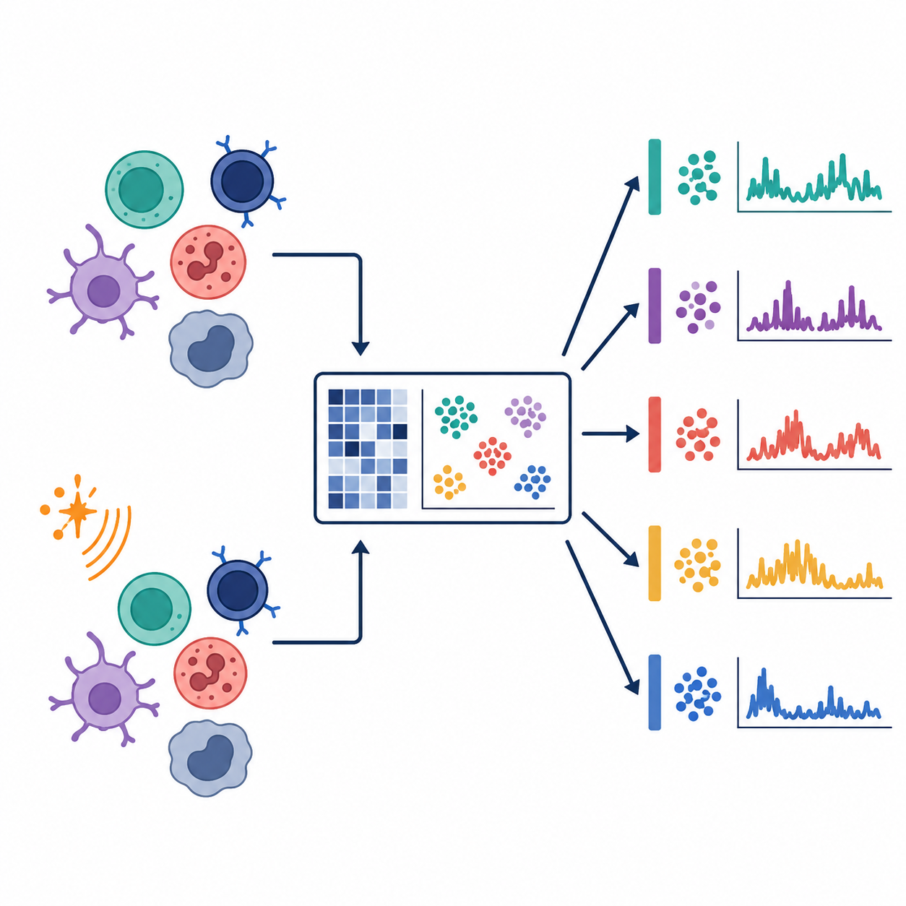
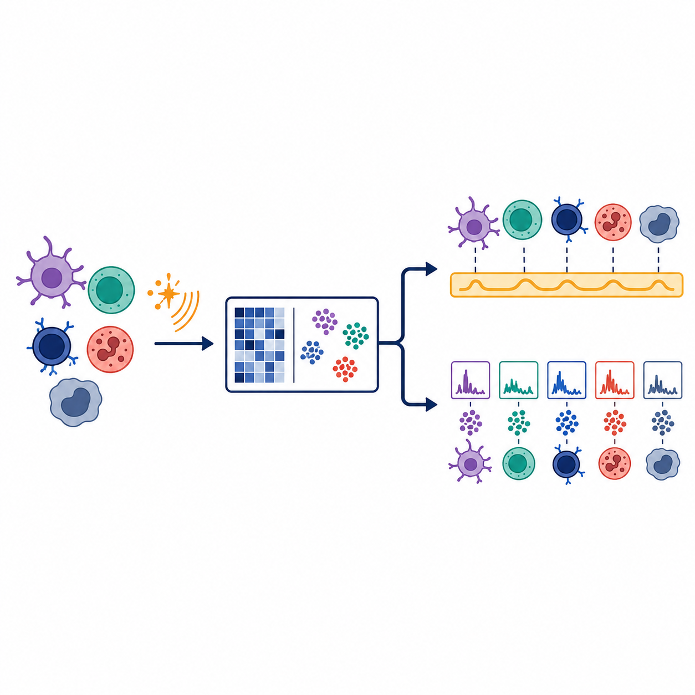
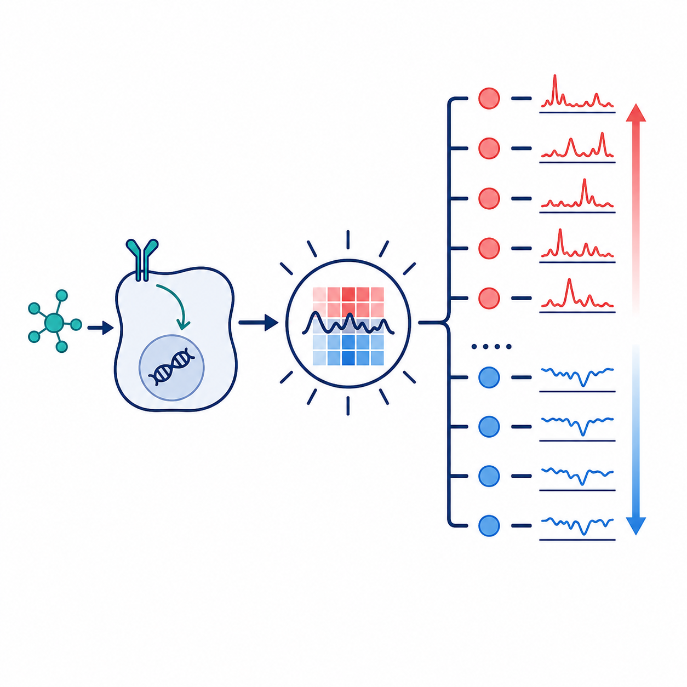
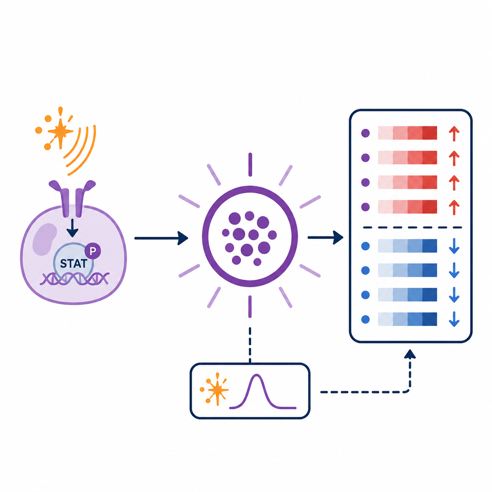
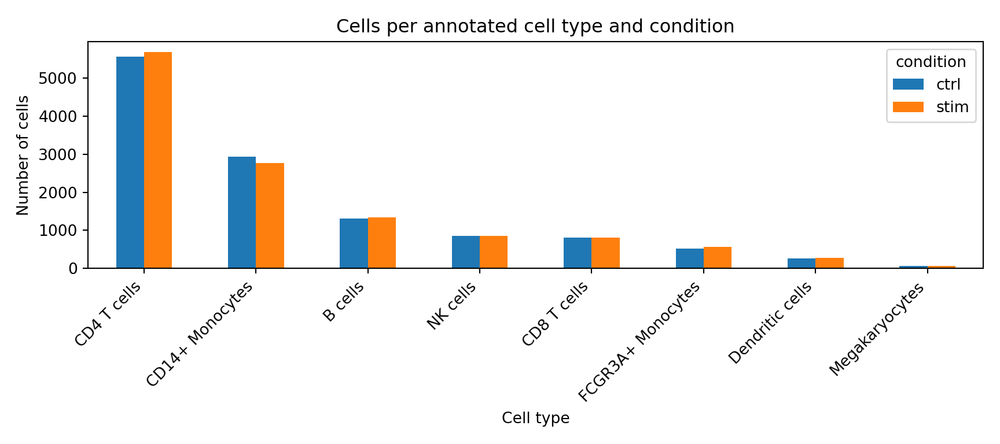
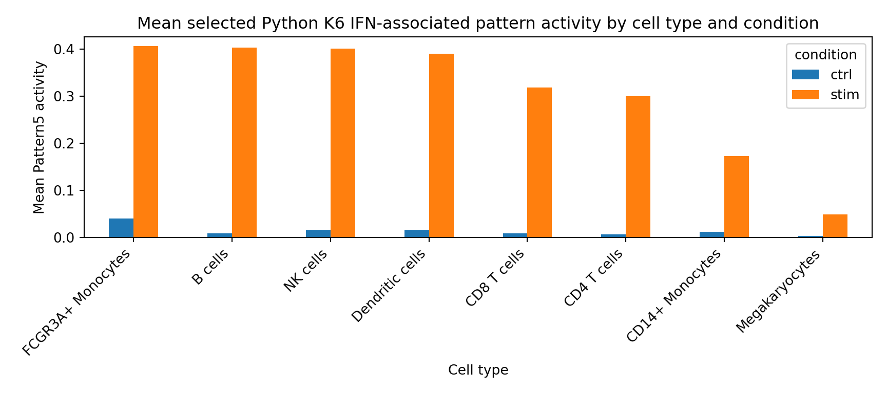

{kind=link}
{kind=link}
suppressPackageStartupMessages({
library(zellkonverter)
library(SingleCellExperiment)
library(SummarizedExperiment)
library(CoGAPS)
library(jsonlite)
library(ggplot2)
library(dplyr)
library(tibble)
library(readr)
})Biomedical Open Case Studies: Finding latent immune-response programs in single-cell RNA-seq with CoGAPS
Disclaimer
The purpose of the Open Case Studies project is to demonstrate the use of various data science methods, tools, and software in the context of messy, real-world data. A given case study does not cover all aspects of the research process, is not claiming to be the most appropriate way to analyze a given data set, and should not be used in the context of making policy or clinical decisions without external consultation from scientific experts or medical care professionals. In addition, due to size constraints, datasets used within a case study may be a subset of the original/full dataset.
License information
This work is licensed under the Creative Commons Attribution-NonCommercial 4.0 (CC BY-NC 4.0) United States License unless otherwise noted.
Funding information
This work is funded through the National Institutes of Health, specifically the National Institute of General Medical Sciences: Grant Number 1R25GM160622.
To cite this case study, please use:
Thomas, Oshane O. and Wright, Carrie. (2026). https://github.com/opencasestudies/ocs-bio-latent-variable. Finding latent immune-response programs in single-cell RNA-seq with CoGAPS (Version 0.1.0).
This case study uses the PBMC IFN-beta stimulation single-cell RNA-seq dataset from Kang et al. and introduces latent-pattern analysis with CoGAPS using R/Bioconductor CoGAPS as the primary implementation and Python/PyCoGAPS-compatible artifacts as a parallel implementation.
GitHub repository
The source files for this case study are available in the opencasestudies/ocs-bio-latent-variable GitHub repository.
The repository contains the Quarto case-study files, scripts, figures, and GitHub-safe teaching artifacts needed for the main learner path. Optional large files for full local reproduction are documented separately and are not required to follow the rendered case study.
Keywords
- Systemic lupus erythematosus
- IFN-beta stimulation
- Peripheral blood mononuclear cells (PBMCs)
- Single-cell RNA-seq
- CoGAPS
- Bayesian non-negative matrix factorization
- Latent expression patterns
- Model rank selection
- Interferon-stimulated genes
- Gene-expression directionality
- R and Python reproducible workflows
- Reproducible biomedical data science
Prerequisites
Draft note: Revisit this prerequisites section after the main narrative, learner path, and reproduction workflow are finalized.
Prerequisites
Add a list of prerequisites here.
Motivation
, often shortened to lupus or SLE, is an in which immune activity can be directed against the body’s own tissues. Lupus can look very different from one person to another. Some people experience fatigue, fever, painful or swollen joints, mouth sores, hair loss, or a rash that worsens with sun exposure; others may develop inflammation involving the kidneys, blood cells, brain, or the lining around the heart and lungs (National Institute of Arthritis and Musculoskeletal and Skin Diseases 2024). Symptoms can also come and go in flares, which makes lupus challenging to study from a single clinical measurement.
Lupus also matters as a public-health problem. In the United States, more than 200,000 people are estimated to have SLE, and the burden is not distributed evenly: SLE is much more common among women and affects several racial and ethnic groups more often than others (Centers for Disease Control and Prevention 2024). Those clinical and epidemiological patterns are not the main outcome of this case study, but they explain why lupus is a meaningful setting for learning how immune signals appear in molecular data. Because lupus is a systemic immune disease, blood immune cells can carry information about immune activation even when the affected tissue is elsewhere in the body.
Before looking at the dataset, it helps to know the main immune-cell players. , or PBMCs, are blood immune cells that include several broad populations. T cells help coordinate or carry out adaptive immune responses. B cells can contribute to antibody responses. Natural killer cells participate in cytotoxic responses against infected or abnormal cells. Monocytes are circulating innate immune cells that can contribute to inflammation and antigen presentation, and dendritic cells help connect early immune sensing to later adaptive responses.
One recurring molecular theme in lupus is the interferon response. are cytokine signals that help immune cells coordinate antiviral and danger-response programs. include IFN-alpha and . When cells respond to interferon signaling, many can change expression, leaving a recognizable molecular signature. In lupus research, that signature is important because interferon signaling can be connected to immune complexes, dendritic cells, T cells, B cells, natural killer cells, macrophages, neutrophil-associated signals, and inflammatory feedback loops (Chyuan, Tzeng, and Chen 2019).
The figure below is not a result from the case-study dataset. It is a biological orientation map for why interferon signaling is worth paying attention to in lupus. In the diagram, self nucleic acids and can stimulate plasmacytoid dendritic cells, an immune-cell type that can produce large amounts of type I interferon. can add nucleic-acid material that further stimulates interferon pathways. Interferons can then influence myeloid dendritic cells, T cells, B cells, natural killer cells, and macrophages. You do not need to memorize every arrow. The main takeaway is that interferon biology can cut across several immune-cell populations, so an analysis should keep both shared interferon activity and cell identity visible.
Draft note: Redraw and replace this lupus/interferon orientation figure before publication.
This case study uses a public single-cell RNA-seq perturbation study by Kang and colleagues to turn that biological motivation into a concrete data-analysis problem (Kang et al. 2018). Kang et al. studied PBMCs from eight lupus donors. For each donor, the researchers split the cell sample into matched portions, called . One aliquot was left untreated as a control, and the other was exposed to IFN-beta for six hours before profiling.
That setup is a . “Perturbation” means that the experiment deliberately changes one condition so the response can be measured. “Paired” means that control and stimulated cells come from the same donors, rather than from unrelated people. This matters because donor-to-donor differences can be large in immune data. By comparing matched control and IFN-beta-stimulated aliquots, the source study gives us a clearer way to ask how cells respond to an interferon signal while keeping donor background and cell identity in view.
The data were generated with . In plain language, this technology measures RNA molecules from many individual cells, so each cell receives its own gene-expression profile. The output is a large table of genes by cells, plus metadata such as condition, donor, and annotated immune-cell identity. This is different from a bulk RNA-seq experiment, where measurements are averaged across many cells before the analyst sees them. Single-cell data let you ask whether different immune-cell populations share a response, but they also create a harder interpretation problem.
The problem is that each cell carries more than one kind of information. A stimulated monocyte should still look like a monocyte. At the same time, that monocyte may share an interferon-response signal with stimulated T cells, B cells, natural killer cells, or dendritic cells. A cell can therefore contain a relatively stable identity signal, a stimulation-associated signal, donor-specific variation, and technical noise all at once. Clustering can help label groups of similar cells, but clustering alone does not automatically separate a shared response from the cell identities that response crosses.
This is where become useful. A latent pattern is an inferred signal: it is learned from the gene-expression data rather than recorded directly as a metadata label. A helpful way to think about this is that a latent-variable model does not have to ask every cell to belong to exactly one group. Instead, it can represent each cell as a mixture of patterns, so a cell can be both “monocyte-like” and “interferon-response-like” to different degrees.
Later in the case study, you will use to learn these latent transcriptional patterns from the PBMC dataset (Fertig et al. 2010). CoGAPS gives each pattern two linked views. The tell you which genes contribute strongly to a pattern. The tell you which cells use that pattern strongly. Those two views let you ask whether one pattern is broadly associated with IFN-beta stimulation while other patterns capture immune-cell identity or other structure.
One more interpretation step is important. CoGAPS pattern weights identify genes that are associated with a pattern, but they do not by themselves say whether those genes are higher or lower after stimulation. For that, you will also examine : whether expression is higher or lower in IFN-beta-stimulated cells compared with matched controls. This distinction matters because a pattern can highlight important genes, while a condition comparison tells you which way those genes move.
The opening roadmap at the top of the case study previews the evidence path you will follow. First, you will start from the paired IFN-beta perturbation design. Next, you will inspect how PBMC identities are arranged in the teaching data object. Then you will learn latent patterns, compare their activity between control and stimulated cells, and connect the genes that define a pattern to expression direction. The roadmap is a map of the analysis, not a demand that you accept a pattern label or model choice before seeing the evidence.
The puzzle for the rest of the case study is therefore not simply whether IFN-beta changes gene expression. It is whether you can recover an interpretable interferon-associated signal inside a mixed immune-cell population while still respecting the fact that a monocyte, a T cell, and a B cell begin from different biological identities.
Key terms
- PBMCs: Peripheral blood mononuclear cells, a mixed sample of blood immune cells.
- IFN-beta stimulation: The controlled perturbation used to create an interferon-response signal.
- Latent pattern: An inferred gene-expression signal learned from the data.
- Cell activity: A score showing where a learned pattern is strongest across cells.
- Gene weights and directionality: Pattern weights rank genes; directionality tells whether those genes rise or fall after stimulation.
Main Questions
The Motivation section introduced the central puzzle: each carries , donor context, and response information at the same time. The questions below turn that puzzle into an analysis path. You will first inspect what learns from control and IFN-beta-stimulated cells, then ask whether the learned separate broad from , which genes support the , and how that pattern varies across annotated PBMC cell types.
Our main questions
- What are present in IFN-beta stimulated and control PBMC data?
- Can CoGAPS help distinguish broad from ?
- Which genes define the strongest , and what is their in stimulation?
- How does the IFN-associated pattern vary across annotated PBMC cell types?
Draft note: Revisit the “Where it is answered” and “Expected takeaway” columns after Data Exploration, Data Visualization, and Data Analysis are fully drafted.
| Research question | Where it is answered | What you should learn | |
|---|---|---|---|
|
 |
Question 1 What latent transcriptional programs are present in IFN-beta stimulated and control PBMC single-cell RNA-seq data? |
Data Import introduces the teaching PBMC dataset and the saved CoGAPS results used for the main analysis. Data Exploration, Data Visualization, and Data Analysis then inspect the learned gene weights, cell activities, and pattern summaries. | CoGAPS represents the PBMC data as multiple latent transcriptional patterns rather than one label per cell. Those patterns become the signals you will interpret in later sections. |
|
 |
Question 2 Can CoGAPS help distinguish broad stimulation-associated activity from cell-type-linked immune programs? |
Data Exploration and Data Visualization show how cells are grouped by condition and cell type. Data Analysis compares how strongly each pattern follows stimulation, which genes define it, and where its activity is strongest across labeled cell types. | A useful model should help separate a broad stimulation-associated activity signal from patterns that look more cell-type-linked or mixed. |
|
 |
Question 3 Which genes define the strongest IFN-associated pattern, and what is their direction in stimulation? |
Data Visualization previews how top pattern genes can be paired with expression direction. Data Analysis identifies the IFN-associated pattern from cell activities, ranks its top genes, and checks whether those genes are higher or lower in IFN-beta-stimulated cells. | The IFN-associated interpretation should be supported by canonical , and must be interpreted alongside directionality. |
|
 |
Question 4 How does the IFN-associated pattern vary across annotated PBMC cell types? |
Data Visualization previews IFN-associated activity by cell type and condition. Data Analysis compares the pattern across labeled PBMC cell types and checks whether the same gene-direction story appears within those groups. | The IFN-associated pattern should be read as broad but not uniform: its cell activity can cut across immune-cell identities while still varying in strength across cell types. |
The questions are ordered intentionally. First you inspect the latent patterns that CoGAPS learns. Then you separate shared stimulation structure from cell-type-linked structure. Only after that do you attach biological meaning through top genes, directionality, and cell-type summaries.
Learning Objectives
By the end of this case study, you will be able to use a stimulation dataset to interpret learned by . You will inspect the data, follow evidence for the model resolution used later in the analysis, connect and to biological interpretation, and evaluate whether one learned pattern is consistent with a broad interferon-associated response.
The main learner path uses included data summaries and saved CoGAPS results so you can focus on interpretation rather than waiting for a long model run. The Full Reproduction Guide at the end of the case study shows how the larger files and selected-model outputs can be regenerated in the validated Docker image.
The objectives are organized into data analysis and programming skills, latent-variable and CoGAPS modeling skills, and biological interpretation skills. Together, they prepare you to answer the four main questions introduced above.
Data Analysis and Programming Learning Objectives:
- Load and check the teaching PBMC single-cell dataset, including condition, donor, and cell-type metadata.
- Explain why CoGAPS uses a genes-by-cells input and how R and Python store the same single-cell data in different orientations.
- Join cell activities, gene weights, top-gene tables, and cell metadata to create interpretation-ready summaries.
- Create and read plots that compare pattern activity across condition and annotated PBMC cell types.
Latent-Variable and CoGAPS Learning Objectives:
- Describe how CoGAPS represents each cell as a mixture of latent transcriptional patterns.
- Use precomputed rank-selection evidence to explain why model resolution matters, without treating the selected resolution as universally optimal.
- Identify an IFN-associated pattern using cell activities, stimulation association, and top-gene evidence while treating numbered pattern labels as run-specific.
- Interpret gene weights together with expression directionality, recognizing that a high pattern weight does not by itself mean a gene is up-regulated.
Biological Interpretation Learning Objectives:
- Explain why a paired IFN-beta perturbation experiment in PBMCs is useful for studying interferon-response programs.
- Recognize canonical interferon-stimulated genes that support the IFN-associated interpretation.
- Distinguish broad stimulation-associated activity from cell-type-linked immune structure in a mixed PBMC population.
- State what the case-study evidence can and cannot support about lupus, IFN-beta response, cell types, and CoGAPS pattern interpretation.
Objectives map: where each skill is used
| Learning goal | What this helps you do | Where it appears |
|---|---|---|
| Understand the biological setting | Explain why lupus PBMCs exposed to IFN-beta are useful for studying interferon-response structure. | Motivation; Context; What are the data? |
| Trace the main learner path | Use included files and saved CoGAPS results while knowing where optional full reproduction belongs. | Packages and Setup; Data Import; Full Reproduction Guide |
| Inspect data and metadata | Check cells, genes, conditions, donors, and annotated cell types before interpreting patterns. | Data Import; Data Exploration |
| Prepare CoGAPS-ready data | Understand genes-by-cells orientation and the difference between the R and Python data representations. | Data Wrangling; Full Reproduction Guide |
| Evaluate model resolution | Explain how the case study uses rank-selection evidence to choose the model resolution inspected later, without treating that choice as universal. | Data Import; Data Analysis; Limitations |
| Interpret latent patterns | Connect gene weights and cell activities to pattern summaries without treating numbered pattern labels as portable across runs. | Data Analysis; Summary |
| Connect patterns to IFN biology | Use stimulation association, top genes, and interferon-stimulated genes to support the IFN-associated interpretation. | Data Visualization; Data Analysis; Summary |
| Check expression direction | Compare gene weights with higher-or-lower expression after stimulation so pattern membership is not confused with regulation. | Data Visualization; Data Analysis |
| Compare activity across cell types | Ask whether the IFN-associated pattern is broad, cell-type-linked, or mixed across annotated PBMC cell types. | Data Visualization; Data Analysis |
| State limits clearly | Separate descriptive latent-pattern evidence from formal disease mechanism, pathway validation, or treatment claims. | Limitations; Summary; Continued Learning |
Context
The Motivation section introduced the biological puzzle for this case study: a mixed population of blood immune cells is exposed to , and the resulting single-cell data contain both immune-cell identity and stimulation-response information. This Context section gives you the background needed to read those signals carefully.
The section has two jobs. First, it gives a short immunology primer: what systemic lupus erythematosus is, why interferon biology is relevant, why PBMCs are useful but mixed, and what the Kang et al. source study measured. Second, it introduces the modeling frame: why clustering alone is not enough for this question, how latent patterns and non-negative matrix factorization work, and how CoGAPS turns a genes-by-cells matrix into evidence you can interpret later.
By the end of this section, you should be ready to enter Data Import with a map in mind. You will know what biological signals the literature suggests you might see, what the source study already established, and why later sections focus on pattern activity, gene weights, directionality, rank choice, and diagnostics.
What is systemic lupus erythematosus?
, or SLE, is a systemic . In an autoimmune disease, the immune system can respond to the body’s own cells or molecules. In SLE, that immune activity can affect several organ systems, and symptoms may include fatigue, fever, joint pain or swelling, skin rashes, mouth sores, blood abnormalities, kidney involvement, neurologic symptoms, or inflammation around the heart or lungs (National Institute of Arthritis and Musculoskeletal and Skin Diseases 2024).
The word systemic matters. SLE is not limited to one tissue or one immune-cell type. A person with SLE can have immune signals in blood that relate to inflammation elsewhere in the body. That is one reason blood immune-cell data are useful for teaching this case study: PBMCs are accessible, contain multiple immune-cell populations, and can carry molecular evidence of immune activation.
SLE is also heterogeneous. Two people with the same diagnosis may have different symptoms, affected tissues, autoantibodies, treatment histories, and immune-cell composition. That heterogeneity is part of what makes lupus difficult to study. It also explains why this case study will avoid overclaiming. We are not trying to diagnose SLE, predict disease activity, or prove a clinical mechanism. We are using a lupus PBMC perturbation dataset to learn how an interpretable interferon-associated signal can be separated from immune-cell identity in single-cell RNA-seq data.
Interferon-beta and its role in lupus
are cytokines: signaling proteins that help immune cells coordinate responses to infection, tissue damage, and other danger signals. include IFN-alpha, IFN-beta, IFN-omega, IFN-epsilon, and IFN-kappa (Chyuan, Tzeng, and Chen 2019). This case study focuses on IFN-beta because IFN-beta is the controlled stimulation used in the source dataset.
A useful way to understand interferon signaling is to follow the signal from outside the cell to the genome. Type I interferons bind the type I interferon receptor, also called . That receptor activates the pathway, including JAK1, TYK2, STAT1, STAT2, and IRF9. These proteins help turn on many , often abbreviated ISGs (Chyuan, Tzeng, and Chen 2019). In plain language, interferon signaling can leave a recognizable gene-expression footprint.
In lupus, this footprint is often called an . Several lupus studies have reported interferon-associated gene-expression signatures in blood, PBMCs, purified immune-cell populations, and affected tissues (Chyuan, Tzeng, and Chen 2019; Catalina et al. 2019). Catalina and colleagues found that interferon signatures in SLE datasets can include prominent IFNB1-like signatures and can be strongly related to monocyte-associated transcripts (Catalina et al. 2019). That observation is important for this case study because it points to a recurring interpretive issue: an interferon signal may be broad, but it may also vary by cell type.
The immune-cell players are worth naming. are known for producing large amounts of type I interferon in response to nucleic-acid sensing. Monocytes and macrophages can participate in inflammatory responses and antigen presentation. Dendritic cells can help connect innate sensing to T-cell and B-cell responses. B cells can contribute to antibody responses, including autoantibody-related processes. T cells help coordinate or carry out adaptive immune responses. Natural killer cells contribute to cytotoxic responses. Neutrophils can release neutrophil extracellular traps, which may provide nucleic-acid material that stimulates interferon pathways in lupus (Chyuan, Tzeng, and Chen 2019).
The main idea is not that every cell type does the same thing. The main idea is that interferon biology connects several immune-cell populations. That makes it plausible that a single-cell analysis could contain both a shared interferon-response signal and cell-type-linked structure at the same time.
PBMCs as a mixed immune-cell system
, or PBMCs, are blood immune cells with round nuclei. They include lymphocytes, such as T cells, B cells, and natural killer cells, as well as monocytes and some dendritic cells. PBMCs do not include every immune cell in blood; for example, mature neutrophils are usually not part of the PBMC fraction. Still, PBMCs are widely used because they are accessible and contain many immune populations relevant to systemic immune activity.
For this case study, PBMCs are useful for the same reason they are challenging. A PBMC sample is not one cell type. It is a mixture. A stimulated monocyte can still have monocyte-like expression. A stimulated B cell can still have B-cell-like expression. A stimulated natural killer cell can still have cytotoxic-cell features. At the same time, all of those cells may share some response to IFN-beta.
This creates a layered interpretation problem. Each cell can carry:
- an immune-cell identity signal,
- a stimulation-associated signal,
- donor-specific variation,
- technical variation, and
- noise from sparse single-cell measurement.
No single metadata label captures all of these layers. A cell-type label tells you what a cell most resembles, but not everything that cell is doing. A condition label tells you whether a cell came from control or stimulated culture, but not which genes drove its response. A latent-variable approach is useful because it can represent cells as mixtures of several signals rather than forcing each cell into one explanatory box.
Summary of the Kang et al. study
The source study for this case study is Kang et al. 2018, which introduced demuxlet and used multiplexed droplet single-cell RNA-seq to study PBMC responses to IFN-beta (Kang et al. 2018). The original paper’s main methodological contribution was demuxlet: a computational approach that uses natural genetic variation to assign each droplet to a donor and detect droplets that likely contain cells from more than one person.
The IFN-beta part of that study used PBMCs from eight lupus patients. For each donor, the researchers split PBMCs into two matched portions, or . One aliquot was left untreated as a control. The other was stimulated with recombinant IFN-beta for six hours. After stimulation, cells were pooled by condition and profiled using droplet single-cell RNA-seq (Kang et al. 2018).
That design has two features that matter for the rest of the case study.
First, it is a . The experiment deliberately changes one condition, IFN-beta exposure, so that the transcriptional response can be measured. This gives the analysis a clear contrast: control versus IFN-beta stimulated cells.
Second, it is a . Control and stimulated cells come from the same donors. That matters because immune profiles can differ substantially across people. A paired design lets the source study compare stimulation responses while keeping donor background more visible.
Kang et al. also used and detection. In droplet single-cell RNA-seq, a droplet ideally contains RNA from one cell. A doublet occurs when material from two cells is captured together and treated as one observation. Demuxlet helped assign cells back to donors and remove likely doublets, improving confidence that later summaries reflected singlet cells rather than mixed droplets (Kang et al. 2018).
The exact files and teaching data objects used in this case study are described in the next section, What are the data? Here, the important source-study point is conceptual: the dataset was designed to compare matched control and IFN-beta-stimulated PBMCs from lupus donors while retaining single-cell and cell-type information.
Source-study findings to carry forward
Kang et al. did not use CoGAPS. The original paper used the dataset to demonstrate multiplexed droplet single-cell RNA-seq, demuxlet, cell-type-specific response analysis, and genetic analyses. This case study reuses the source dataset for a different teaching goal: learning how CoGAPS can recover and interpret latent transcriptional patterns.
Several source-study findings should guide your expectations before you see the CoGAPS results:
- IFN-beta stimulation produced broad transcriptional changes across PBMCs.
- The source study identified thousands of genes with differential expression in at least one cell type after IFN-beta stimulation (Kang et al. 2018).
- The IFN-beta response included antiviral, chemokine, and lupus-related pathway signals.
- IFN-beta stimulation did not erase cell identity. The original analysis still recovered major immune-cell groups after stimulation.
- Cell-type composition and donor-to-donor variation both mattered, which is why the case study keeps cell type and donor metadata visible.
These findings are expectations, not answers. They tell you what kinds of signals would be biologically plausible. Later sections ask whether the CoGAPS patterns support those expectations in the teaching data.
Interferon genes learners should recognize
You do not need to memorize a long list of interferon genes. You do need enough vocabulary to recognize why a later top-gene list might support an interferon-associated interpretation.
Several gene families often appear in interferon-response analyses:
- ISG genes, such as
ISG15andISG20, are named as interferon-stimulated genes and often appear in interferon-response signatures. - IFIT and IFITM genes, such as
IFIT1,IFIT2,IFIT3, andIFITMfamily members, are commonly associated with antiviral interferon responses. - IFI genes, such as
IFI6, are part of a broad set of interferon-inducible genes. - MX and OAS genes, such as
MX1,OAS1, andOASL, are classic antiviral-response genes that often appear downstream of interferon signaling. - IRF and STAT-related genes, such as
IRF7andSTAT1, connect to transcriptional regulation and interferon pathway signaling. - Nucleic-acid sensing genes, such as
DDX58andIFIH1, relate to sensing viral or self nucleic acids and can connect upstream danger sensing to interferon responses. - Chemokine and immune-regulatory genes, such as
CXCL10,TNFSF10, andSOCS1, can reflect downstream immune communication or regulation.
These gene names are anchors for interpretation, not shortcuts. A top-gene list that includes several canonical interferon-related genes is consistent with an interferon-associated pattern. But you still need to ask where the pattern is active, whether it tracks stimulation, and whether the genes are higher or lower in stimulated cells.
This last point is important. CoGAPS gene weights identify genes that help define a pattern. They do not, by themselves, tell you whether a gene is upregulated or downregulated. Later, you will pair pattern weights with condition-based directionality checks.
From cell clusters to latent patterns
Clustering is often one of the first useful tools in single-cell RNA-seq analysis. A clustering workflow groups cells with similar expression profiles, and those groups can help analysts assign cell-type labels. Reviews of single-cell clustering emphasize that clustering is central to identifying putative cell types, but also that interpretation is challenging because single-cell data are high-dimensional, sparse, and sensitive to preprocessing choices (Kiselev, Andrews, and Hemberg 2019).
For this case study, clustering is helpful but not sufficient. Clustering asks which cells are similar overall. The research questions ask something more layered: which transcriptional signals are present, which signals are shared across immune-cell types, and which signals are most associated with IFN-beta stimulation.
Kotliar and colleagues describe this as a distinction between cell-type identity programs and cellular activity programs (Kotliar et al. 2019). An identity program reflects what a cell is, such as a T cell, B cell, monocyte, or dendritic cell. An activity program reflects what a cell is doing, such as responding to stimulation, cycling, producing cytokines, or activating an antiviral pathway.
The difficult part is that a single cell can express both kinds of programs. A monocyte can have monocyte identity genes and interferon-response genes. A T cell can have T-cell markers and stimulation-response genes. A B cell can retain B-cell identity while also responding to IFN-beta. That is why a one-cell, one-cluster view can be too restrictive for this case study.
A is an inferred signal learned from the expression matrix. It is not a metadata column recorded by the experiment. A useful latent pattern might be identity-like, stimulation-associated, donor-linked, technical, or mixed. The analysis task is not simply to name every pattern. The task is to evaluate each pattern using evidence.
Stop and think
Why might a stimulated monocyte be hard to interpret with only one label?
Answer
A stimulated monocyte carries at least two interpretable signals: it still has monocyte-like expression, and it may also activate interferon-response genes. A single label can name the cell identity, but it does not describe every transcriptional program active in that cell.NMF: the mathematical shape of the problem
Single-cell RNA-seq data can be organized as a matrix. In this case study, the modeling input is a genes-by-cells matrix. Each row represents a gene, each column represents a cell, and each entry is a non-negative expression value.
, or NMF, asks whether a large non-negative matrix can be approximated as the product of two smaller non-negative matrices. At the intuition level:
observed expression matrix ~= gene weights x cell activitiesIn a compact mathematical form:
\[ D \approx A P \]
Here:
| Object | What it represents | How to read it |
|---|---|---|
D |
the observed expression matrix | genes by cells |
A |
the gene-by-pattern matrix | which genes contribute to each pattern |
P |
the pattern-by-cell matrix | which cells use each pattern strongly |
K |
the number of patterns requested | the model resolution |
For one gene and one cell, the model approximates expression by adding up contributions from all K patterns:
\[ D_{g,c} \approx \sum_{k=1}^{K} A_{g,k} P_{k,c} \]
In plain language, a cell’s expression profile is represented as a mixture of learned patterns. The non-negative constraint matters because patterns add together rather than cancel each other out. That additive structure fits the PBMC problem: a cell can be monocyte-like and interferon-response-like at the same time.
NMF is not magic. It does not know biology by itself. It produces matrices that must be interpreted using genes, cell metadata, experimental design, diagnostics, and prior biological knowledge.
How CoGAPS extends vanilla NMF
is the NMF-family method used in this case study. The name stands for Coordinated Gene Activity in Pattern Sets. CoGAPS was introduced as an R/C++ package for identifying patterns and biological process activity in transcriptomic data (Fertig et al. 2010). Later single-cell CoGAPS work extended this latent-pattern framework to sparse single-cell RNA-seq data (Stein-O’Brien et al. 2019). The official CoGAPS User Guide introduces the method and software workflows for R and Python users.

Image credit: CoGAPS logo and schematic from the Fertig Lab CoGAPS User Guide.
The schematic above shows the same basic matrix idea introduced in the NMF section: a large gene-expression matrix is represented by a smaller set of learned patterns. CoGAPS keeps that additive, non-negative structure, but fits the model using a Bayesian, sampling-based approach. Instead of treating one numerical factorization as the whole answer, CoGAPS samples plausible factorizations and summarizes them. This gives the method a natural connection to diagnostics, uncertainty, and stability checks.
You do not need to understand every sampling detail to use the case study. The learner-facing interpretation rests on four ideas:
- Patterns are overlapping. A cell can use more than one pattern.
- Pattern numbers are run-specific. A biological signal should be identified by evidence, not by assuming one pattern label is universal.
- Gene weights are not directionality. A high-weight gene helps define a pattern, but a separate condition comparison is needed to determine whether the gene is higher or lower after stimulation.
- Diagnostics matter. A biologically tempting pattern still needs evidence that the model ran sensibly and that the interpretation is stable enough to use.
The case study uses the R/Bioconductor CoGAPS workflow as the primary implementation. Python/PyCoGAPS-compatible outputs are provided as a secondary implementation path in later tabbed examples. That implementation detail matters for reproducibility, but the interpretation frame is the same: connect pattern activity, gene weights, source-study design, and biological expectations.
What choosing K means
The rank, written as K, is the number of latent patterns CoGAPS is asked to learn. Choosing K is a model-resolution decision.
If K is too small, distinct biological signals can be compressed together. For example, one pattern might blend an interferon response with cell-type identity. If K is too large, a signal can fragment across several patterns, making the model harder to interpret and less stable. Neither extreme is automatically better.
This is why the case study does not treat K as a purely technical setting. The useful value of K depends on the analysis goal. Here, the goal is not only to find a strong interferon-response signal. The goal is to find a model that also preserves enough non-interferon structure to respect the mixed PBMC system.
The value of K used for the main analysis is introduced in Data Import after you inspect model-selection evidence. Context gives you the idea; the next sections provide the evidence.
Why run a rank sweep?
A rank sweep means fitting or evaluating CoGAPS models across several candidate values of K. The purpose is to ask how model interpretation changes as the requested number of patterns changes.
For self-guided learners, the important point is that the sweep is precomputed. You will not need to rerun the full sweep during the main learner path. Instead, you will inspect saved summaries that compare candidate ranks using evidence such as:
- whether the interferon-related signal is recovered consistently,
- whether top genes are stable across seeds,
- whether non-interferon structure is preserved,
- whether patterns appear redundant or fragmented,
- how runtime changes as
Kincreases, and - whether the eventual model is interpretable for the biological question.
This is a good example of a broader modeling principle: model choice should be tied to the scientific question. A rank that maximizes one metric may not be the best teaching or biological model if it collapses other important structure.
How pattern evidence will be interpreted later
Later sections will use CoGAPS outputs, but the interpretation logic starts here. A pattern becomes biologically meaningful only after several kinds of evidence agree.
You will ask:
- Where is the pattern active? Cell activities show which cells use the pattern strongly.
- Does activity track the experimental condition? Stimulation-associated activity should differ between control and IFN-beta-stimulated cells.
- Which genes define the pattern? Gene weights identify genes that contribute strongly to the pattern.
- Do the top genes fit known biology? Interferon-associated genes provide literature-guided expectations.
- Which direction do the genes move? Directionality checks ask whether genes are higher or lower after stimulation.
- Does the pattern respect cell identity? Cell-type summaries help distinguish broad stimulation activity from cell-type-linked structure.
- Did the model run sensibly? Diagnostics help evaluate convergence, stability, and fit.
These evidence types are intentionally separate. A pattern can have plausible genes but weak condition association. A pattern can correlate with stimulation but include genes that require careful directionality checks. A pattern can be strong in one cell type but weaker in another. The case study will teach you to combine these pieces rather than rely on one plot or one statistic.
Interpretive boundaries before analysis
The Context section should give you expectations, not conclusions. The source data come from lupus donors, but the main analysis studies an in vitro IFN-beta stimulation response. The case study does not test a lupus therapy, predict patient outcomes, or prove a disease mechanism. Those limitations are discussed more fully later.
For now, carry forward a narrower and more useful question: can a latent-pattern model help separate a broad interferon-response signal from immune-cell identity in a mixed PBMC single-cell dataset?
Core distinctions to carry forward
- PBMC identity versus stimulation response: A cell can retain immune-cell identity while also responding to IFN-beta.
- Cell cluster versus latent pattern: A cluster groups similar cells; a latent pattern can be shared across cells in different groups.
- Gene weight versus expression direction: A high-weight gene helps define a pattern; directionality asks whether that gene rises or falls after stimulation.
- Rank
Kversus pattern label:Kcontrols how many patterns the model learns; pattern labels are names assigned within one run. - Literature expectation versus analysis result: Interferon biology tells you what to look for; the CoGAPS analysis tests whether the data support that interpretation.
The next section turns this background into concrete files. You will see which processed data objects are included in the case study, which saved CoGAPS artifacts support the main learner path, and which larger files are optional for full reproduction. With the biological and modeling vocabulary in place, those files should read less like a list of artifacts and more like the evidence chain you will use to answer the main questions.
What are the data?
We will use a processed subset of the PBMC IFN-beta stimulation single-cell RNA-seq dataset from Kang et al. The learner-facing analysis object contains 24,673 cells and 3,000 highly variable genes. Each cell has metadata for condition, annotated cell type, and donor/replicate.
| Object or variable | Details |
|---|---|
data/artifact_manifest.json |
Inventory of GitHub-safe and optional full-local artifacts |
data/processed/k_selection/k_selection_decision_manifest.json |
Current selected-model decision and evidence map |
data/processed/input/preprocessed_cells_hvg3000.h5ad |
Cells x genes AnnData object used for the main learner workflow |
condition |
Experimental condition: ctrl or stim |
cell_type |
Annotated PBMC cell type |
replicate |
Donor or patient replicate label |
.layers["counts"] |
Count layer used for targeted pseudobulk directionality |
data/processed/input/cogaps_input_genesxcells_hvg3000_float64.h5ad |
Optional genes x cells matrix prepared for Python/PyCoGAPS full local runs |
data/processed/selected_model_k6/r/cogaps_K6_seed2_iter2000.metrics.json |
Selected R K6 sparse-on model metadata |
data/processed/selected_model_k6/r/pattern_gene_weights.tsv.gz |
Lightweight exported R CoGAPS gene-weight (A) matrix |
data/processed/selected_model_k6/r/pattern_cell_activities.tsv.gz |
Lightweight exported R CoGAPS cell-activity (P) matrix |
pattern_cell_activities_with_metadata.csv.gz |
Cell-level pattern activities joined to key metadata and embeddings |
pattern_top_genes.csv |
Top weighted genes per pattern from the chosen model |
pattern_correlations.csv |
Pattern correlations with the stimulation indicator |
pattern_activity_by_celltype_condition.csv |
Mean and median pattern activity summaries by cell type and condition |
pattern_summary.csv |
Compact per-pattern interpretation table for lightweight renders |
pattern_gene_directionality_global.csv |
Targeted global stim-vs-ctrl directionality for top pattern genes |
pattern_gene_directionality_by_celltype.csv |
Targeted cell-type directionality for top pattern genes |
The local processed object is sparse: about 96 percent of entries are zero. This is typical for single-cell RNA-seq and is one reason that careful preprocessing and interpretation are important.
The case study starts from cached files so learners can focus on latent-variable analysis and interpretation rather than full raw-data processing. For GitHub and other lightweight render contexts, the smaller exported pattern tables allow the biological interpretation to remain available even when full model objects such as the R .rds or Python .h5ad files are absent.
Limitations
There are some important considerations regarding this data analysis to keep in mind:
- This case study uses a processed AnnData object with 3,000 highly variable genes rather than a full workflow from raw sequencing files or all measured genes.
- The chosen CoGAPS rank,
K = 6, comes from a limited completed sweep and should be described as a local model-selection decision rather than a universal optimum. - The main learner workflow loads a saved chosen model by default because running even one CoGAPS model can take substantial time.
- CoGAPS pattern weights identify genes associated with latent programs, but up/down regulation must be assessed separately using expression contrasts.
- The directionality analysis is targeted to top pattern genes and is not a genome-wide differential-expression analysis.
- Cell-type heterogeneity summaries are descriptive unless additional donor-aware inference is added.
- The dataset tests IFN-beta stimulation in PBMCs, not direct dengue infection.
Ethical Considerations
There are some important ethical considerations when working with data relating to this case study’s main questions.
- These data come from human immune cells, so learners should treat donor metadata carefully even when the dataset is public and de-identified.
- Public case-study repositories should not include protected health information or unnecessary sensitive metadata.
- Reproducible workflows improve transparency, but they also make it important to document what data were processed, subset, or cached.
- This case study is educational and should not be used for clinical decision-making.
The processed files in this draft project use donor or patient replicate labels only for analysis structure. We will not attempt to infer private donor attributes from these labels.
Packages and Setup
This case study uses R as the primary implementation and Python as a parallel implementation in the second tab. The R path uses SingleCellExperiment and Bioconductor CoGAPS; the Python path uses AnnData and PyCoGAPS-compatible saved outputs. The scientific workflow is the same in both languages, but saved CoGAPS outputs are kept separate because the two implementations should be treated as parallel analyses rather than numerically identical reruns.
Analysis packages
| Package | Use |
|---|---|
zellkonverter |
Read .h5ad files into SingleCellExperiment |
SingleCellExperiment |
Represent single-cell data in Bioconductor form |
SummarizedExperiment |
Access assays and metadata cleanly |
CoGAPS |
Optional local CoGAPS model execution in R |
jsonlite |
Read saved metrics JSON files |
ggplot2 |
Plot figures in the R workflow |
dplyr, tibble, readr |
Summaries and lightweight artifact I/O |
from __future__ import annotations
from pathlib import Path
import json
import platform
import sys
import anndata as ad
import matplotlib.pyplot as plt
import numpy as np
import pandas as pd
from scipy import sparse| Package | Use |
|---|---|
anndata |
Read and write AnnData .h5ad files |
pandas |
Summarize metadata, pattern tables, and directionality outputs |
numpy |
Matrix and numerical operations |
scipy |
Sparse matrix handling and statistical summaries |
matplotlib |
Plot figures used in the case study |
PyCoGAPS |
Optional local CoGAPS model execution in Python |
We will also define reusable paths and helper functions in both languages.
Reusable paths and helpers
find_project_root_r <- function(start = getwd()) {
path <- normalizePath(start, winslash = "/", mustWork = FALSE)
repeat {
if (file.exists(file.path(path, "index.qmd")) && dir.exists(file.path(path, "data"))) {
return(path)
}
parent <- dirname(path)
if (identical(parent, path)) {
stop("Could not locate the case-study project root.")
}
path <- parent
}
}
resolve_first_existing_r <- function(...) {
candidates <- c(...)
for (candidate in candidates) {
if (file.exists(candidate)) {
return(candidate)
}
}
candidates[[1]]
}
ROOT_R <- find_project_root_r()
DATA_DIR_R <- file.path(ROOT_R, "data")
PROCESSED_DIR_R <- file.path(ROOT_R, "data", "processed")
INPUT_DIR_R <- file.path(PROCESSED_DIR_R, "input")
MODEL_SELECTION_DIR_R <- file.path(PROCESSED_DIR_R, "k_selection")
SELECTED_MODEL_DIR_R <- file.path(PROCESSED_DIR_R, "selected_model_k6")
FIGURES_DIR_R <- file.path(PROCESSED_DIR_R, "figures")
LEGACY_RESULTS_DIR_R <- file.path(ROOT_R, "data", "results")
SELECTED_RESULTS_DIR_R <- file.path(SELECTED_MODEL_DIR_R, "python")
PY_K6_RESULTS_DIR_R <- SELECTED_RESULTS_DIR_R
PY_RESULTS_DIR_R <- file.path(ROOT_R, "data", "results_python")
R_RESULTS_DIR_R <- file.path(ROOT_R, "data", "results_r")
R_K6_RESULTS_DIR_R <- file.path(SELECTED_MODEL_DIR_R, "r")
CHOSEN_K_R <- 6L
CHOSEN_SEED_R <- 2L
CHOSEN_ITER_R <- 2000L
STIM_LABEL_R <- "stim"
ARTIFACT_MANIFEST_JSON_R <- file.path(DATA_DIR_R, "artifact_manifest.json")
K_SELECTION_DECISION_JSON_R <- file.path(MODEL_SELECTION_DIR_R, "k_selection_decision_manifest.json")
PREPROCESSED_H5AD_R <- file.path(INPUT_DIR_R, "preprocessed_cells_hvg3000.h5ad")
COGAPS_INPUT_H5AD_R <- file.path(INPUT_DIR_R, "cogaps_input_genesxcells_hvg3000_float64.h5ad")
PREPROCESS_CONFIG_JSON_R <- file.path(INPUT_DIR_R, "preprocess_config_hvg3000.json")
PHASE1_LOWERK_SUMMARY_CSV_R <- file.path(MODEL_SELECTION_DIR_R, "phase1_lowerk_summary.csv")
PHASE1B_LOWERK_LONG_SUMMARY_CSV_R <- file.path(MODEL_SELECTION_DIR_R, "phase1b_lowerk_long_summary.csv")
PHASE3_HIGHK_SUMMARY_CSV_R <- file.path(MODEL_SELECTION_DIR_R, "phase3_highk_2000_summary.csv")
CANDIDATE_PATTERN_SUMMARY_CSV_R <- file.path(MODEL_SELECTION_DIR_R, "candidate_pattern_summary.csv")
CANDIDATE_K7_ACTIVITY_MATCHES_CSV_R <- file.path(MODEL_SELECTION_DIR_R, "candidate_best_k7_activity_matches.csv")
R_CHOSEN_RESULT_RDS_R <- file.path(R_K6_RESULTS_DIR_R, "cogaps_K6_seed2_iter2000.rds")
R_CHOSEN_METRICS_JSON_R <- file.path(R_K6_RESULTS_DIR_R, "cogaps_K6_seed2_iter2000.metrics.json")
R_PATTERN_GENE_WEIGHTS_TSV_GZ_R <- file.path(R_K6_RESULTS_DIR_R, "pattern_gene_weights.tsv.gz")
R_PATTERN_CELL_ACTIVITIES_TSV_GZ_R <- file.path(R_K6_RESULTS_DIR_R, "pattern_cell_activities.tsv.gz")
R_PATTERN_CELL_ACTIVITIES_WITH_METADATA_CSV_GZ_R <- file.path(R_K6_RESULTS_DIR_R, "pattern_cell_activities_with_metadata.csv.gz")
R_PATTERN_TOP_GENES_CSV_R <- file.path(R_K6_RESULTS_DIR_R, "pattern_top_genes.csv")
R_PATTERN_CORRELATIONS_CSV_R <- file.path(R_K6_RESULTS_DIR_R, "pattern_correlations.csv")
R_PATTERN_ACTIVITY_BY_CELLTYPE_CONDITION_CSV_R <- file.path(R_K6_RESULTS_DIR_R, "pattern_activity_by_celltype_condition.csv")
R_PATTERN_ACTIVITY_BY_REPLICATE_CONDITION_CSV_R <- file.path(R_K6_RESULTS_DIR_R, "pattern_activity_by_replicate_condition.csv")
R_PATTERN_SUMMARY_CSV_R <- file.path(R_K6_RESULTS_DIR_R, "pattern_summary.csv")
R_DIRECTION_GLOBAL_CSV_R <- file.path(R_K6_RESULTS_DIR_R, "pattern_gene_directionality_global.csv")
R_DIRECTION_CELLTYPE_CSV_R <- file.path(R_K6_RESULTS_DIR_R, "pattern_gene_directionality_by_celltype.csv")
R_DIRECTION_SUMMARY_CSV_R <- file.path(R_K6_RESULTS_DIR_R, "pattern_direction_summary.csv")
PY_CHOSEN_RESULT_H5AD_R <- file.path(SELECTED_RESULTS_DIR_R, "cogaps_K6_seed2_iter2000.h5ad")
PY_CHOSEN_METRICS_JSON_R <- file.path(SELECTED_RESULTS_DIR_R, "cogaps_K6_seed2_iter2000.metrics.json")
HAS_R_CHOSEN_RESULT_R <- file.exists(R_CHOSEN_RESULT_RDS_R)
HAS_R_LIGHTWEIGHT_PATTERN_MATRICES_R <- file.exists(R_PATTERN_GENE_WEIGHTS_TSV_GZ_R) && file.exists(R_PATTERN_CELL_ACTIVITIES_TSV_GZ_R)
HAS_R_LIGHTWEIGHT_ACTIVITY_METADATA_R <- file.exists(R_PATTERN_CELL_ACTIVITIES_WITH_METADATA_CSV_GZ_R)
HAS_R_PATTERN_TOP_GENES_R <- file.exists(R_PATTERN_TOP_GENES_CSV_R)
HAS_R_PATTERN_CORRELATIONS_R <- file.exists(R_PATTERN_CORRELATIONS_CSV_R)
HAS_R_PATTERN_ACTIVITY_BY_CELLTYPE_R <- file.exists(R_PATTERN_ACTIVITY_BY_CELLTYPE_CONDITION_CSV_R)
HAS_R_PATTERN_SUMMARY_R <- file.exists(R_PATTERN_SUMMARY_CSV_R)
R_ANALYSIS_MODE_R <- if (HAS_R_CHOSEN_RESULT_R) {
"full_chosen_result"
} else if (HAS_R_LIGHTWEIGHT_PATTERN_MATRICES_R) {
"lightweight_derived"
} else {
"unavailable"
}
pattern_columns_r <- function(x) {
pats <- grep("^Pattern_?[0-9]+$", x, value = TRUE)
pats[order(as.integer(sub("^Pattern_?", "", pats)))]
}
canonicalize_pattern_names_r <- function(x) {
sub("^Pattern_?([0-9]+)$", "Pattern\\1", x)
}
top_genes_from_matrix_r <- function(matrix, pattern, n = 15) {
ordered <- sort(matrix[, pattern], decreasing = TRUE)
ordered <- head(ordered, n)
tibble::tibble(
gene = names(ordered),
weight = unname(ordered)
)
}
load_lightweight_pattern_matrices_r <- function(weights_path, activities_path) {
A <- readr::read_tsv(weights_path, show_col_types = FALSE) |>
tibble::column_to_rownames("gene") |>
as.data.frame(check.names = FALSE)
P <- readr::read_tsv(activities_path, show_col_types = FALSE) |>
tibble::column_to_rownames("cell_barcode") |>
as.data.frame(check.names = FALSE)
colnames(A) <- canonicalize_pattern_names_r(colnames(A))
colnames(P) <- canonicalize_pattern_names_r(colnames(P))
list(A = A, P = P)
}def find_project_root(start: Path) -> Path:
for path in [start, *start.parents]:
if (path / "index.qmd").exists() and (path / "data").exists():
return path
raise FileNotFoundError("Could not locate the case-study project root.")
def resolve_first_existing(*candidates: Path) -> Path:
for candidate in candidates:
if candidate.exists():
return candidate
return candidates[0]
ROOT = find_project_root(Path.cwd())
DATA_DIR = ROOT / "data"
PROCESSED_DIR = DATA_DIR / "processed"
INPUT_DIR = PROCESSED_DIR / "input"
MODEL_SELECTION_DIR = PROCESSED_DIR / "k_selection"
SELECTED_MODEL_DIR = PROCESSED_DIR / "selected_model_k6"
FIGURES_DIR = PROCESSED_DIR / "figures"
LEGACY_RESULTS_DIR = ROOT / "data" / "results"
SELECTED_RESULTS_DIR = SELECTED_MODEL_DIR / "python"
PY_K6_RESULTS_DIR = SELECTED_RESULTS_DIR
PY_RESULTS_DIR = ROOT / "data" / "results_python"
R_RESULTS_DIR = ROOT / "data" / "results_r"
R_K6_RESULTS_DIR = SELECTED_MODEL_DIR / "r"
ARTIFACT_MANIFEST_JSON = DATA_DIR / "artifact_manifest.json"
K_SELECTION_DECISION_JSON = MODEL_SELECTION_DIR / "k_selection_decision_manifest.json"
PREPROCESSED_H5AD = INPUT_DIR / "preprocessed_cells_hvg3000.h5ad"
COGAPS_INPUT_H5AD = INPUT_DIR / "cogaps_input_genesxcells_hvg3000_float64.h5ad"
PREPROCESS_CONFIG_JSON = INPUT_DIR / "preprocess_config_hvg3000.json"
PY_CHOSEN_RESULT_H5AD = SELECTED_RESULTS_DIR / "cogaps_K6_seed2_iter2000.h5ad"
PY_CHOSEN_METRICS_JSON = SELECTED_RESULTS_DIR / "cogaps_K6_seed2_iter2000.metrics.json"
PY_SUMMARY_BY_K_CSV = resolve_first_existing(
MODEL_SELECTION_DIR / "phase1b_lowerk_long_summary.csv",
PY_RESULTS_DIR / "summary_by_K.csv",
LEGACY_RESULTS_DIR / "summary_by_K.csv",
)
PHASE1_LOWERK_SUMMARY_CSV = MODEL_SELECTION_DIR / "phase1_lowerk_summary.csv"
PHASE1B_LOWERK_LONG_SUMMARY_CSV = MODEL_SELECTION_DIR / "phase1b_lowerk_long_summary.csv"
PHASE3_HIGHK_SUMMARY_CSV = MODEL_SELECTION_DIR / "phase3_highk_2000_summary.csv"
CANDIDATE_PATTERN_SUMMARY_CSV = MODEL_SELECTION_DIR / "candidate_pattern_summary.csv"
CANDIDATE_K7_ACTIVITY_MATCHES_CSV = MODEL_SELECTION_DIR / "candidate_best_k7_activity_matches.csv"
PY_PER_RUN_METRICS_CSV = resolve_first_existing(
PY_RESULTS_DIR / "per_run_metrics.csv",
LEGACY_RESULTS_DIR / "per_run_metrics.csv",
)
PY_DIRECTION_GLOBAL_CSV = resolve_first_existing(
SELECTED_RESULTS_DIR / "pattern_gene_directionality_global.csv",
PY_RESULTS_DIR / "pattern_gene_directionality_global.csv",
LEGACY_RESULTS_DIR / "pattern_gene_directionality_global.csv",
)
PY_DIRECTION_CELLTYPE_CSV = resolve_first_existing(
SELECTED_RESULTS_DIR / "pattern_gene_directionality_by_celltype.csv",
PY_RESULTS_DIR / "pattern_gene_directionality_by_celltype.csv",
LEGACY_RESULTS_DIR / "pattern_gene_directionality_by_celltype.csv",
)
PY_DIRECTION_SUMMARY_CSV = resolve_first_existing(
SELECTED_RESULTS_DIR / "pattern_direction_summary.csv",
PY_RESULTS_DIR / "pattern_direction_summary.csv",
LEGACY_RESULTS_DIR / "pattern_direction_summary.csv",
)
PY_PATTERN_GENE_WEIGHTS_TSV_GZ = resolve_first_existing(
SELECTED_RESULTS_DIR / "pattern_gene_weights.tsv.gz",
PY_RESULTS_DIR / "pattern_gene_weights.tsv.gz",
LEGACY_RESULTS_DIR / "pattern_gene_weights.tsv.gz",
)
PY_PATTERN_CELL_ACTIVITIES_TSV_GZ = resolve_first_existing(
SELECTED_RESULTS_DIR / "pattern_cell_activities.tsv.gz",
PY_RESULTS_DIR / "pattern_cell_activities.tsv.gz",
LEGACY_RESULTS_DIR / "pattern_cell_activities.tsv.gz",
)
PY_PATTERN_CELL_ACTIVITIES_WITH_METADATA_CSV_GZ = resolve_first_existing(
SELECTED_RESULTS_DIR / "pattern_cell_activities_with_metadata.csv.gz",
PY_RESULTS_DIR / "pattern_cell_activities_with_metadata.csv.gz",
LEGACY_RESULTS_DIR / "pattern_cell_activities_with_metadata.csv.gz",
)
PY_PATTERN_TOP_GENES_CSV = resolve_first_existing(
SELECTED_RESULTS_DIR / "pattern_top_genes.csv",
PY_RESULTS_DIR / "pattern_top_genes.csv",
LEGACY_RESULTS_DIR / "pattern_top_genes.csv",
)
PY_PATTERN_CORRELATIONS_CSV = resolve_first_existing(
SELECTED_RESULTS_DIR / "pattern_correlations.csv",
PY_RESULTS_DIR / "pattern_correlations.csv",
LEGACY_RESULTS_DIR / "pattern_correlations.csv",
)
PY_PATTERN_ACTIVITY_BY_CELLTYPE_CONDITION_CSV = resolve_first_existing(
SELECTED_RESULTS_DIR / "pattern_activity_by_celltype_condition.csv",
PY_RESULTS_DIR / "pattern_activity_by_celltype_condition.csv",
LEGACY_RESULTS_DIR / "pattern_activity_by_celltype_condition.csv",
)
PY_PATTERN_ACTIVITY_BY_REPLICATE_CONDITION_CSV = resolve_first_existing(
SELECTED_RESULTS_DIR / "pattern_activity_by_replicate_condition.csv",
PY_RESULTS_DIR / "pattern_activity_by_replicate_condition.csv",
LEGACY_RESULTS_DIR / "pattern_activity_by_replicate_condition.csv",
)
PY_PATTERN_SUMMARY_CSV = resolve_first_existing(
SELECTED_RESULTS_DIR / "pattern_summary.csv",
PY_RESULTS_DIR / "pattern_summary.csv",
LEGACY_RESULTS_DIR / "pattern_summary.csv",
)
R_CHOSEN_RESULT_RDS = R_K6_RESULTS_DIR / "cogaps_K6_seed2_iter2000.rds"
R_CHOSEN_METRICS_JSON = R_K6_RESULTS_DIR / "cogaps_K6_seed2_iter2000.metrics.json"
R_PATTERN_GENE_WEIGHTS_TSV_GZ = R_K6_RESULTS_DIR / "pattern_gene_weights.tsv.gz"
R_PATTERN_CELL_ACTIVITIES_TSV_GZ = R_K6_RESULTS_DIR / "pattern_cell_activities.tsv.gz"
R_PATTERN_CELL_ACTIVITIES_WITH_METADATA_CSV_GZ = R_K6_RESULTS_DIR / "pattern_cell_activities_with_metadata.csv.gz"
R_PATTERN_TOP_GENES_CSV = R_K6_RESULTS_DIR / "pattern_top_genes.csv"
R_PATTERN_CORRELATIONS_CSV = R_K6_RESULTS_DIR / "pattern_correlations.csv"
R_PATTERN_ACTIVITY_BY_CELLTYPE_CONDITION_CSV = R_K6_RESULTS_DIR / "pattern_activity_by_celltype_condition.csv"
R_PATTERN_ACTIVITY_BY_REPLICATE_CONDITION_CSV = R_K6_RESULTS_DIR / "pattern_activity_by_replicate_condition.csv"
R_PATTERN_SUMMARY_CSV = R_K6_RESULTS_DIR / "pattern_summary.csv"
R_DIRECTION_GLOBAL_CSV = R_K6_RESULTS_DIR / "pattern_gene_directionality_global.csv"
R_DIRECTION_CELLTYPE_CSV = R_K6_RESULTS_DIR / "pattern_gene_directionality_by_celltype.csv"
R_DIRECTION_SUMMARY_CSV = R_K6_RESULTS_DIR / "pattern_direction_summary.csv"
CHOSEN_K = 6
CHOSEN_SEED = 2
CHOSEN_ITER = 2000
STIM_LABEL = "stim"
HAS_CACHED_COGAPS_INPUT = COGAPS_INPUT_H5AD.exists()
HAS_PY_CHOSEN_RESULT = PY_CHOSEN_RESULT_H5AD.exists()
HAS_PY_LIGHTWEIGHT_PATTERN_MATRICES = (
PY_PATTERN_GENE_WEIGHTS_TSV_GZ.exists() and PY_PATTERN_CELL_ACTIVITIES_TSV_GZ.exists()
)
HAS_PY_LIGHTWEIGHT_ACTIVITY_METADATA = PY_PATTERN_CELL_ACTIVITIES_WITH_METADATA_CSV_GZ.exists()
HAS_PY_PATTERN_TOP_GENES = PY_PATTERN_TOP_GENES_CSV.exists()
HAS_PY_PATTERN_CORRELATIONS = PY_PATTERN_CORRELATIONS_CSV.exists()
HAS_PY_PATTERN_ACTIVITY_BY_CELLTYPE = PY_PATTERN_ACTIVITY_BY_CELLTYPE_CONDITION_CSV.exists()
HAS_PY_PATTERN_SUMMARY = PY_PATTERN_SUMMARY_CSV.exists()
HAS_R_CHOSEN_RESULT = R_CHOSEN_RESULT_RDS.exists()
HAS_R_LIGHTWEIGHT_PATTERN_MATRICES = (
R_PATTERN_GENE_WEIGHTS_TSV_GZ.exists() and R_PATTERN_CELL_ACTIVITIES_TSV_GZ.exists()
)
HAS_R_LIGHTWEIGHT_ACTIVITY_METADATA = R_PATTERN_CELL_ACTIVITIES_WITH_METADATA_CSV_GZ.exists()
HAS_R_PATTERN_TOP_GENES = R_PATTERN_TOP_GENES_CSV.exists()
HAS_R_PATTERN_CORRELATIONS = R_PATTERN_CORRELATIONS_CSV.exists()
HAS_R_PATTERN_ACTIVITY_BY_CELLTYPE = R_PATTERN_ACTIVITY_BY_CELLTYPE_CONDITION_CSV.exists()
HAS_R_PATTERN_SUMMARY = R_PATTERN_SUMMARY_CSV.exists()
PY_ANALYSIS_MODE = (
"full_chosen_result"
if HAS_PY_CHOSEN_RESULT
else "lightweight_derived"
if HAS_PY_LIGHTWEIGHT_PATTERN_MATRICES
else "unavailable"
)
R_ANALYSIS_MODE = (
"full_chosen_result"
if HAS_R_CHOSEN_RESULT
else "lightweight_derived"
if HAS_R_LIGHTWEIGHT_PATTERN_MATRICES
else "unavailable"
)
# Backward-compatible aliases used by the Python chunks below.
CHOSEN_RESULT_H5AD = PY_CHOSEN_RESULT_H5AD
CHOSEN_METRICS_JSON = PY_CHOSEN_METRICS_JSON
SUMMARY_BY_K_CSV = PY_SUMMARY_BY_K_CSV
PER_RUN_METRICS_CSV = PY_PER_RUN_METRICS_CSV
DIRECTION_GLOBAL_CSV = PY_DIRECTION_GLOBAL_CSV
DIRECTION_CELLTYPE_CSV = PY_DIRECTION_CELLTYPE_CSV
DIRECTION_SUMMARY_CSV = PY_DIRECTION_SUMMARY_CSV
PATTERN_GENE_WEIGHTS_TSV_GZ = PY_PATTERN_GENE_WEIGHTS_TSV_GZ
PATTERN_CELL_ACTIVITIES_TSV_GZ = PY_PATTERN_CELL_ACTIVITIES_TSV_GZ
PATTERN_CELL_ACTIVITIES_WITH_METADATA_CSV_GZ = PY_PATTERN_CELL_ACTIVITIES_WITH_METADATA_CSV_GZ
PATTERN_TOP_GENES_CSV = PY_PATTERN_TOP_GENES_CSV
PATTERN_CORRELATIONS_CSV = PY_PATTERN_CORRELATIONS_CSV
PATTERN_ACTIVITY_BY_CELLTYPE_CONDITION_CSV = PY_PATTERN_ACTIVITY_BY_CELLTYPE_CONDITION_CSV
PATTERN_ACTIVITY_BY_REPLICATE_CONDITION_CSV = PY_PATTERN_ACTIVITY_BY_REPLICATE_CONDITION_CSV
PATTERN_SUMMARY_CSV = PY_PATTERN_SUMMARY_CSV
ANALYSIS_MODE = PY_ANALYSIS_MODE
def pattern_columns(df: pd.DataFrame) -> list[str]:
return sorted(
[c for c in df.columns if str(c).startswith("Pattern")],
key=lambda value: int(str(value).replace("Pattern", "")),
)
def top_genes_from_matrix(matrix: pd.DataFrame, pattern: str, n: int = 15) -> pd.DataFrame:
top = matrix[pattern].sort_values(ascending=False).head(n)
top_df = top.rename("weight").reset_index()
top_df.columns = ["gene", "weight"]
return top_df
def load_lightweight_pattern_matrices(weights_path: Path, activities_path: Path) -> tuple[pd.DataFrame, pd.DataFrame]:
A = pd.read_csv(weights_path, sep="\t", compression="gzip").set_index("gene")
P = pd.read_csv(activities_path, sep="\t", compression="gzip").set_index("cell_barcode")
return A, P
def build_cogaps_input(preprocessed_cells: ad.AnnData) -> ad.AnnData:
cogaps_input = preprocessed_cells.T.copy()
X = cogaps_input.X.toarray() if sparse.issparse(cogaps_input.X) else cogaps_input.X
cogaps_input.X = np.asarray(X, dtype=np.float64)
cogaps_input.var = preprocessed_cells.obs.copy()
cogaps_input.var_names = preprocessed_cells.obs_names.copy()
cogaps_input.obs = preprocessed_cells.var.copy()
cogaps_input.obs_names = preprocessed_cells.var_names.copy()
return cogaps_inputData Import
We start by reading the artifact manifests. These files tell us which inputs and saved model outputs belong to the main learner path, which files are optional for full local reproduction, and which rank was selected for the case study.
artifact_manifest_r <- jsonlite::read_json(ARTIFACT_MANIFEST_JSON_R, simplifyVector = TRUE)
k_selection_decision_r <- jsonlite::read_json(K_SELECTION_DECISION_JSON_R, simplifyVector = TRUE)
tibble::tibble(
selected_K = k_selection_decision_r$selected_model$K,
seed = k_selection_decision_r$selected_model$seed,
nIterations = k_selection_decision_r$selected_model$nIterations,
sparseOptimization = k_selection_decision_r$selected_model$sparseOptimization,
primary_implementation = k_selection_decision_r$selected_model$primary_implementation,
decision_status = k_selection_decision_r$decision_status
)# A tibble: 1 × 6
selected_K seed nIterations sparseOptimization primary_implementation
<int> <int> <int> <lgl> <chr>
1 6 2 2000 TRUE R/Bioconductor CoGAPS
# ℹ 1 more variable: decision_status <chr>with open(ARTIFACT_MANIFEST_JSON) as f:
artifact_manifest = json.load(f)
with open(K_SELECTION_DECISION_JSON) as f:
k_selection_decision = json.load(f)
pd.DataFrame(
[{
"selected_K": k_selection_decision["selected_model"]["K"],
"seed": k_selection_decision["selected_model"]["seed"],
"nIterations": k_selection_decision["selected_model"]["nIterations"],
"sparseOptimization": k_selection_decision["selected_model"]["sparseOptimization"],
"primary_implementation": k_selection_decision["selected_model"]["primary_implementation"],
"decision_status": k_selection_decision["decision_status"],
}]
) selected_K ... decision_status
0 6 ... Leading selected model pending CoGAPS team fee...
[1 rows x 6 columns]This table confirms the model-selection contract before any pattern interpretation begins. The selected model is K = 6, but the pattern labels are still run-specific; the R selected run labels the IFN-associated pattern as Pattern4, while the Python saved output labels the corresponding signal as Pattern5.
The next import step loads the cached processed single-cell object. This keeps the focus of the case study on latent-variable analysis and interpretation rather than on rebuilding every preprocessing step from the original source files.
sce_cells <- zellkonverter::readH5AD(PREPROCESSED_H5AD_R, reader = "R")
sce_cellsclass: SingleCellExperiment
dim: 3000 24673
metadata(2): hvg log1p
assays(2): X counts
rownames(3000): HES4 ISG15 ... SLC19A1 S100B
rowData names(7): name n_cells ... variances variances_norm
colnames(24673): AAACATACATTTCC-1 AAACATACCAGAAA-1 ... TTTGCATGGGACGA-2
TTTGCATGTCTTAC-2
colData names(13): nCount_RNA nFeature_RNA ... seurat_clusters
condition
reducedDimNames(2): X_pca X_umap
mainExpName: NULL
altExpNames(0):adata_cells = ad.read_h5ad(PREPROCESSED_H5AD)
adata_cellsAnnData object with n_obs × n_vars = 24673 × 3000
obs: 'nCount_RNA', 'nFeature_RNA', 'tsne1', 'tsne2', 'label', 'cluster', 'cell_type', 'replicate', 'nCount_SCT', 'nFeature_SCT', 'integrated_snn_res.0.4', 'seurat_clusters', 'condition'
var: 'name', 'n_cells', 'highly_variable', 'highly_variable_rank', 'means', 'variances', 'variances_norm'
uns: 'hvg', 'log1p'
obsm: 'X_pca', 'X_umap'
layers: 'counts'We need three metadata columns for the rest of the case study:
condition, so we can compare control and IFN-beta stimulated cellscell_type, so we can summarize patterns across immune compartmentsreplicate, so we can perform paired donor-aware summaries
required_obs_r <- c("condition", "cell_type", "replicate")
missing_obs_r <- setdiff(required_obs_r, colnames(colData(sce_cells)))
if (length(missing_obs_r) > 0) {
stop(sprintf("Missing required metadata columns: %s", paste(missing_obs_r, collapse = ", ")))
}
as.data.frame(colData(sce_cells)[, required_obs_r]) |>
head() condition cell_type replicate
AAACATACATTTCC-1 ctrl CD14+ Monocytes patient_1016
AAACATACCAGAAA-1 ctrl CD14+ Monocytes patient_1256
AAACATACCATGCA-1 ctrl CD4 T cells patient_1488
AAACATACCTCGCT-1 ctrl CD14+ Monocytes patient_1256
AAACATACCTGGTA-1 ctrl Dendritic cells patient_1039
AAACATACGATGAA-1 ctrl CD4 T cells patient_1488required_obs = {"condition", "cell_type", "replicate"}
missing_obs = required_obs.difference(adata_cells.obs.columns)
if missing_obs:
raise ValueError(f"Missing required metadata columns: {sorted(missing_obs)}")
adata_cells.obs[["condition", "cell_type", "replicate"]].head() condition cell_type replicate
index
AAACATACATTTCC-1 ctrl CD14+ Monocytes patient_1016
AAACATACCAGAAA-1 ctrl CD14+ Monocytes patient_1256
AAACATACCATGCA-1 ctrl CD4 T cells patient_1488
AAACATACCTCGCT-1 ctrl CD14+ Monocytes patient_1256
AAACATACCTGGTA-1 ctrl Dendritic cells patient_1039The default path in this case study uses saved R-primary CoGAPS artifacts. If the full R result is available, the case study can load it directly; otherwise it uses lightweight exported matrices and summaries that are suitable for GitHub and classroom rendering. The Python tab follows the same cooking-show pattern: full .h5ad support is preserved for local review, but lightweight Python exports are sufficient when that larger file is absent.
cat("R analysis mode:", R_ANALYSIS_MODE_R, "\n")R analysis mode: lightweight_derived cat("R full chosen model available:", HAS_R_CHOSEN_RESULT_R, "\n")R full chosen model available: FALSE cat("R chosen model metrics available:", file.exists(R_CHOSEN_METRICS_JSON_R), "\n")R chosen model metrics available: TRUE cat("R lightweight pattern matrices available:", HAS_R_LIGHTWEIGHT_PATTERN_MATRICES_R, "\n")R lightweight pattern matrices available: TRUE cat("R lightweight pattern summary available:", HAS_R_PATTERN_SUMMARY_R, "\n")R lightweight pattern summary available: TRUE print("Python analysis mode:", PY_ANALYSIS_MODE)Python analysis mode: lightweight_derivedprint("Python full chosen model available:", HAS_PY_CHOSEN_RESULT)Python full chosen model available: Falseprint("Cached dense CoGAPS input available:", HAS_CACHED_COGAPS_INPUT)Cached dense CoGAPS input available: Falseprint("Python chosen model metrics available:", PY_CHOSEN_METRICS_JSON.exists())Python chosen model metrics available: Trueprint("Python lightweight pattern matrices available:", HAS_PY_LIGHTWEIGHT_PATTERN_MATRICES)Python lightweight pattern matrices available: Trueprint("Python lightweight pattern summary available:", HAS_PY_PATTERN_SUMMARY)Python lightweight pattern summary available: TrueYou should see that the lightweight R and Python pattern summaries are available even if the optional full model objects are not. That is the intended learner path: analyze the selected model and model-selection summaries without requiring a long CoGAPS rerun.
Data Exploration
Before running or interpreting a model, we should inspect what is in the processed single-cell object.
cat("Shape:", paste(dim(sce_cells), collapse = " x "), "\n")Shape: 3000 x 24673 cat("colData columns:", paste(colnames(colData(sce_cells)), collapse = ", "), "\n")colData columns: nCount_RNA, nFeature_RNA, tsne1, tsne2, label, cluster, cell_type, replicate, nCount_SCT, nFeature_SCT, integrated_snn_res.0.4, seurat_clusters, condition cat("rowData columns:", paste(colnames(rowData(sce_cells)), collapse = ", "), "\n")rowData columns: name, n_cells, highly_variable, highly_variable_rank, means, variances, variances_norm cat("Assays:", paste(assayNames(sce_cells), collapse = ", "), "\n")Assays: X, counts print("Shape:", adata_cells.shape)Shape: (24673, 3000)print("Observation columns:", list(adata_cells.obs.columns))Observation columns: ['nCount_RNA', 'nFeature_RNA', 'tsne1', 'tsne2', 'label', 'cluster', 'cell_type', 'replicate', 'nCount_SCT', 'nFeature_SCT', 'integrated_snn_res.0.4', 'seurat_clusters', 'condition']print("Variable columns:", list(adata_cells.var.columns))Variable columns: ['name', 'n_cells', 'highly_variable', 'highly_variable_rank', 'means', 'variances', 'variances_norm']print("Layers:", list(adata_cells.layers.keys()))Layers: ['counts']The object has genes as rows and cells as columns in the R SingleCellExperiment representation. That is the orientation expected by the R CoGAPS workflow. In the Python AnnData representation, the same processed object is cells by genes, so the Python CoGAPS input must be transposed before model fitting.
Condition and cell-type summaries
condition_counts_r <- as.data.frame(table(colData(sce_cells)$condition), stringsAsFactors = FALSE)
colnames(condition_counts_r) <- c("condition", "n_cells")
condition_counts_r[order(condition_counts_r$n_cells, decreasing = TRUE), ] condition n_cells
2 stim 12358
1 ctrl 12315celltype_counts_r <- as.data.frame(table(colData(sce_cells)$cell_type), stringsAsFactors = FALSE)
colnames(celltype_counts_r) <- c("cell_type", "n_cells")
celltype_counts_r[order(celltype_counts_r$n_cells, decreasing = TRUE), ] cell_type n_cells
1 CD4 T cells 11238
2 CD14+ Monocytes 5697
3 B cells 2651
4 NK cells 1716
5 CD8 T cells 1621
6 FCGR3A+ Monocytes 1089
7 Dendritic cells 529
8 Megakaryocytes 132condition_counts = (
adata_cells.obs["condition"]
.value_counts()
.rename_axis("condition")
.reset_index(name="n_cells")
)
celltype_counts = (
adata_cells.obs["cell_type"]
.value_counts()
.rename_axis("cell_type")
.reset_index(name="n_cells")
)
condition_counts condition n_cells
0 stim 12358
1 ctrl 12315celltype_counts cell_type n_cells
0 CD4 T cells 11238
1 CD14+ Monocytes 5697
2 B cells 2651
3 NK cells 1716
4 CD8 T cells 1621
5 FCGR3A+ Monocytes 1089
6 Dendritic cells 529
7 Megakaryocytes 132We can also check whether every donor or replicate has cells in both conditions.
table(colData(sce_cells)$replicate, colData(sce_cells)$condition)
ctrl stim
patient_101 858 1166
patient_107 517 525
patient_1015 2738 2352
patient_1016 1723 1635
patient_1039 461 641
patient_1244 1879 1464
patient_1256 2108 2026
patient_1488 2031 2549pd.crosstab(adata_cells.obs["replicate"], adata_cells.obs["condition"])condition ctrl stim
replicate
patient_101 858 1166
patient_107 517 525
patient_1015 2738 2352
patient_1016 1723 1635
patient_1039 461 641
patient_1244 1879 1464
patient_1256 2108 2026
patient_1488 2031 2549Sparsity
Single-cell RNA-seq matrices often contain many zeros. We can measure sparsity directly.
X_r <- assay(sce_cells, "X")
nnz_r <- if (inherits(X_r, "sparseMatrix")) Matrix::nnzero(X_r) else sum(X_r != 0)
total_r <- nrow(sce_cells) * ncol(sce_cells)
sparsity_r <- 1 - (nnz_r / total_r)
cat("Nonzero entries:", format(nnz_r, big.mark = ","), "\n")Nonzero entries: 2,916,846 cat("Total entries:", format(total_r, big.mark = ","), "\n")Total entries: 74,019,000 cat(sprintf("Sparsity: %.4f%%\n", 100 * sparsity_r))Sparsity: 96.0593%X = adata_cells.X
nnz = X.nnz if sparse.issparse(X) else np.count_nonzero(X)
total = adata_cells.n_obs * adata_cells.n_vars
sparsity = 1 - (nnz / total)
print(f"Nonzero entries: {nnz:,}")Nonzero entries: 2,916,846print(f"Total entries: {total:,}")Total entries: 74,019,000print(f"Sparsity: {sparsity:.4%}")Sparsity: 96.0593%The processed object is about 96 percent zeros. This sparse structure is one reason that we use methods designed for high-dimensional single-cell data and interpret individual genes carefully.
Data Wrangling
The processed object was generated before this case study. The frozen preprocessing steps include filtering genes by minimum cell count, library-size normalization, log transformation, and selection of 3,000 highly variable genes.
preprocess_config_r <- jsonlite::read_json(PREPROCESS_CONFIG_JSON_R, simplifyVector = TRUE)
preprocess_config_r$raw_h5ad
[1] "kang_counts_25k.h5ad"
$min_cells
[1] 3
$target_sum
[1] 10000
$hvg_flavor
[1] "seurat_v3"
$n_top_genes
[1] 3000
$created_at
[1] "2026-02-22T14:25:58"with open(PREPROCESS_CONFIG_JSON) as f:
preprocess_config = json.load(f)
preprocess_config{'raw_h5ad': 'kang_counts_25k.h5ad', 'min_cells': 3, 'target_sum': 10000.0, 'hvg_flavor': 'seurat_v3', 'n_top_genes': 3000, 'created_at': '2026-02-22T14:25:58'}Preparing a CoGAPS input
In the primary R workflow, zellkonverter::readH5AD() imports the processed .h5ad into a SingleCellExperiment with genes in rows and cells in columns. That means the matrix is already in the orientation expected by Bioconductor CoGAPS.
cogaps_input_r <- assay(sce_cells, "X")
cat("R CoGAPS input shape (genes x cells):", paste(dim(cogaps_input_r), collapse = " x "), "\n")R CoGAPS input shape (genes x cells): 3000 x 24673 # If you want an explicit dense matrix object for a full local R CoGAPS run:
cogaps_input_dense_r <- as.matrix(assay(sce_cells, "X"))
storage.mode(cogaps_input_dense_r) <- "double"if HAS_CACHED_COGAPS_INPUT:
cogaps_input = ad.read_h5ad(COGAPS_INPUT_H5AD)
cogaps_input
else:
cogaps_input = None
print("Cached dense CoGAPS input not available in this render context.")
print("Expected genes x cells shape:", (adata_cells.n_vars, adata_cells.n_obs))Cached dense CoGAPS input not available in this render context.
Expected genes x cells shape: (3000, 24673)cogaps_input_from_cells = build_cogaps_input(adata_cells)
cogaps_input_from_cells.write_h5ad(COGAPS_INPUT_H5AD)if cogaps_input is not None:
assert cogaps_input.n_obs == adata_cells.n_vars
assert cogaps_input.n_vars == adata_cells.n_obs
print("CoGAPS input shape:", cogaps_input.shape)
else:
print("Skipping dense input validation because the cached genes x cells file is absent.")Skipping dense input validation because the cached genes x cells file is absent.Question opportunity
Why do we need to track matrix orientation carefully across Python and R?
Answer
Because the meaning of rows and columns changes across data structures. In RSingleCellExperiment, genes live in rows and cells in columns, so the imported matrix is already aligned to the CoGAPS expectation. In Python AnnData, the processed object is cells x genes, so we transpose to get the genes x cells matrix used by CoGAPS.
Data Visualization
Visualizations help us check the structure of the dataset before interpreting model results.
Cell types by condition
celltype_condition_r <- as.data.frame(table(
cell_type = colData(sce_cells)$cell_type,
condition = colData(sce_cells)$condition
), stringsAsFactors = FALSE)
colnames(celltype_condition_r) <- c("cell_type", "condition", "n_cells")
head(celltype_condition_r) cell_type condition n_cells
1 CD4 T cells ctrl 5560
2 CD14+ Monocytes ctrl 2932
3 B cells ctrl 1316
4 NK cells ctrl 855
5 CD8 T cells ctrl 811
6 FCGR3A+ Monocytes ctrl 520ggplot(celltype_condition_r, aes(x = cell_type, y = n_cells, fill = condition)) +
geom_col(position = "dodge") +
labs(
title = "Cells per annotated cell type and condition",
x = "Cell type",
y = "Number of cells"
) +
theme_minimal(base_size = 11) +
theme(axis.text.x = element_text(angle = 45, hjust = 1))
celltype_condition = (
adata_cells.obs.groupby(["cell_type", "condition"], observed=True)
.size()
.reset_index(name="n_cells")
)
celltype_condition.head() cell_type condition n_cells
0 CD4 T cells ctrl 5560
1 CD4 T cells stim 5678
2 CD14+ Monocytes ctrl 2932
3 CD14+ Monocytes stim 2765
4 B cells ctrl 1316pivot_counts = (
celltype_condition
.pivot(index="cell_type", columns="condition", values="n_cells")
.fillna(0)
.sort_values(by=["ctrl", "stim"], ascending=False)
)
ax = pivot_counts.plot(kind="bar", figsize=(9, 4))
ax.set_ylabel("Number of cells")
ax.set_xlabel("Cell type")
ax.set_title("Cells per annotated cell type and condition")
plt.xticks(rotation=45, ha="right")(array([0, 1, 2, 3, 4, 5, 6, 7]), [Text(0, 0, 'CD4 T cells'), Text(1, 0, 'CD14+ Monocytes'), Text(2, 0, 'B cells'), Text(3, 0, 'NK cells'), Text(4, 0, 'CD8 T cells'), Text(5, 0, 'FCGR3A+ Monocytes'), Text(6, 0, 'Dendritic cells'), Text(7, 0, 'Megakaryocytes')])plt.tight_layout()
plt.show()
The conditions are nearly balanced overall and within major cell types. That makes it easier to compare pattern activity between control and stimulated cells, although donor-aware summaries are still important.
Preview of the main CoGAPS pattern
The next plot was generated from the selected R K6 CoGAPS model. We will rebuild the pieces behind this interpretation in the Data Analysis section.

Preview of pattern-gene directionality
CoGAPS tells us which genes define a pattern. It does not directly tell us whether those genes are up or down in stimulation. For that, we performed a targeted paired pseudobulk directionality check.

We will inspect the directionality tables directly in the analysis section for both the R and Python saved results.
Data Analysis
This section is the core of the case study. We use the selected R K6 CoGAPS model, inspect the pattern matrices, identify the IFN-associated pattern, and connect pattern genes to stimulation directionality. Python is included as a parallel implementation in the second tab.
The R and Python analyses follow the same scientific path, but they use separately saved outputs:
- selected R/Bioconductor artifacts live under
data/processed/selected_model_k6/r/ - selected Python/PyCoGAPS-compatible artifacts live under
data/processed/selected_model_k6/python/ - older K7 artifacts are retained only as reference or sensitivity outputs
Why use K = 6?
The full rank-selection sweep is not part of the main learner workflow. It was run beforehand as an instructor/reviewer-facing model-selection step. The selected model used K = 6, seed = 2, n_iter = 2000, and sparse optimization.
summary_by_k_r <- read.csv(PHASE1B_LOWERK_LONG_SUMMARY_CSV_R, stringsAsFactors = FALSE)
summary_by_k_r[order(summary_by_k_r$K, summary_by_k_r$n_iter), ] K n_iter n_ok runtime_min_mean runtime_min_min runtime_min_max ifn_corr_mean
13 2 2000 5 19.68080 18.31441 20.82297 0.6156431
14 3 2000 5 23.47084 22.84547 24.16435 0.5817096
1 4 2000 5 28.35399 27.26694 29.08266 0.7645643
2 4 10000 5 141.24047 132.54712 146.94721 0.7625707
3 4 20000 5 307.69024 290.59951 323.48561 0.7625668
4 5 2000 5 31.90613 30.73771 34.29731 0.7543821
5 5 10000 5 173.96999 171.23225 179.41592 0.7538872
6 5 20000 5 352.65927 327.38063 378.58982 0.7538226
7 6 2000 5 36.89940 35.98374 37.95387 0.7504816
8 6 10000 5 196.20764 189.13052 199.70319 0.7485207
9 6 20000 5 393.49340 379.78589 413.25770 0.7490895
10 7 2000 5 40.09793 39.31687 40.83587 0.7409839
11 7 10000 5 225.85389 222.18919 228.58470 0.7478650
12 7 20000 5 470.43075 460.77227 478.63498 0.7505585
15 8 2000 5 45.13583 43.39036 46.60061 0.7178149
ifn_corr_std ifn_corr_min ifn_corr_max jaccard_mean jaccard_min best_seed
13 3.843487e-04 0.6150099 0.6159512 0.9610860 0.9230769 2
14 6.743918e-02 0.5513968 0.7023481 0.7714286 0.4285714 1
1 1.082170e-03 0.7635256 0.7656826 0.9764706 0.9607843 2
2 3.753844e-04 0.7622203 0.7631251 0.9843137 0.9607843 1
3 2.467221e-04 0.7622851 0.7628272 0.9764706 0.9607843 2
4 2.369605e-03 0.7527820 0.7584958 0.9764706 0.9607843 1
5 2.273231e-04 0.7537093 0.7542655 0.9843137 0.9607843 1
6 8.818312e-05 0.7537309 0.7539065 1.0000000 1.0000000 4
7 2.383015e-03 0.7484803 0.7530860 1.0000000 1.0000000 2
8 6.448656e-05 0.7484737 0.7486306 1.0000000 1.0000000 1
9 2.256938e-04 0.7488855 0.7493296 1.0000000 1.0000000 4
10 6.943663e-03 0.7350655 0.7484909 0.9538462 0.9230769 2
11 2.300480e-03 0.7458027 0.7503194 0.9538462 0.9230769 4
12 5.188068e-03 0.7460441 0.7587148 0.9460030 0.9230769 1
15 4.010101e-02 0.6738867 0.7473399 0.6823529 0.4705882 1
best_ifn_pattern best_ifn_corr best_top50_overlap_vs_K7_seed2_iter2000
13 Pattern1 0.6159512 39
14 Pattern2 0.7023481 36
1 Pattern4 0.7656826 47
2 Pattern1 0.7631251 46
3 Pattern3 0.7628272 46
4 Pattern4 0.7584958 49
5 Pattern4 0.7542655 49
6 Pattern4 0.7539065 49
7 Pattern5 0.7530860 49
8 Pattern6 0.7486306 49
9 Pattern3 0.7493296 49
10 Pattern2 0.7484909 50
11 Pattern3 0.7503194 49
12 Pattern5 0.7587148 49
15 Pattern1 0.7473399 49
best_top10
13 ISG15;FTH1;ISG20;IFIT3;IFI6;LY6E;IFIT1;FTL;MX1;TNFSF10
14 FTH1;ISG20;ISG15;IFI6;LY6E;IFIT3;MX1;IFIT1;ACTB;FTL
1 ISG15;ISG20;IFI6;IFIT3;LY6E;FTH1;IFIT1;MX1;SAT1;IFIT2
2 ISG15;ISG20;IFI6;IFIT3;LY6E;FTH1;IFIT1;MX1;SAT1;IFIT2
3 ISG15;ISG20;IFI6;IFIT3;LY6E;FTH1;IFIT1;MX1;SAT1;IFIT2
4 ISG15;ISG20;IFI6;IFIT3;LY6E;IFIT1;MX1;FTH1;SAT1;IFIT2
5 ISG15;ISG20;IFI6;IFIT3;LY6E;IFIT1;MX1;FTH1;SAT1;IFIT2
6 ISG15;ISG20;IFI6;IFIT3;LY6E;IFIT1;MX1;FTH1;SAT1;IFIT2
7 ISG15;ISG20;IFI6;IFIT3;LY6E;IFIT1;MX1;FTH1;IFIT2;SAT1
8 ISG15;ISG20;IFI6;IFIT3;LY6E;IFIT1;MX1;FTH1;IFIT2;SAT1
9 ISG15;ISG20;IFI6;IFIT3;LY6E;IFIT1;MX1;FTH1;IFIT2;SAT1
10 ISG15;ISG20;IFI6;IFIT3;LY6E;IFIT1;MX1;FTH1;IFIT2;IRF7
11 ISG15;ISG20;IFI6;IFIT3;LY6E;IFIT1;MX1;FTH1;IFIT2;IRF7
12 ISG15;ISG20;IFI6;IFIT3;LY6E;IFIT1;MX1;FTH1;IFIT2;IRF7
15 ISG15;ISG20;IFI6;IFIT3;LY6E;IFIT1;MX1;FTH1;IFIT2;IRF7summary_by_k = pd.read_csv(PHASE1B_LOWERK_LONG_SUMMARY_CSV)
summary_by_k.sort_values(["K", "n_iter"]) K ... best_top10
12 2 ... ISG15;FTH1;ISG20;IFIT3;IFI6;LY6E;IFIT1;FTL;MX1...
13 3 ... FTH1;ISG20;ISG15;IFI6;LY6E;IFIT3;MX1;IFIT1;ACT...
0 4 ... ISG15;ISG20;IFI6;IFIT3;LY6E;FTH1;IFIT1;MX1;SAT...
1 4 ... ISG15;ISG20;IFI6;IFIT3;LY6E;FTH1;IFIT1;MX1;SAT...
2 4 ... ISG15;ISG20;IFI6;IFIT3;LY6E;FTH1;IFIT1;MX1;SAT...
3 5 ... ISG15;ISG20;IFI6;IFIT3;LY6E;IFIT1;MX1;FTH1;SAT...
4 5 ... ISG15;ISG20;IFI6;IFIT3;LY6E;IFIT1;MX1;FTH1;SAT...
5 5 ... ISG15;ISG20;IFI6;IFIT3;LY6E;IFIT1;MX1;FTH1;SAT...
6 6 ... ISG15;ISG20;IFI6;IFIT3;LY6E;IFIT1;MX1;FTH1;IFI...
7 6 ... ISG15;ISG20;IFI6;IFIT3;LY6E;IFIT1;MX1;FTH1;IFI...
8 6 ... ISG15;ISG20;IFI6;IFIT3;LY6E;IFIT1;MX1;FTH1;IFI...
9 7 ... ISG15;ISG20;IFI6;IFIT3;LY6E;IFIT1;MX1;FTH1;IFI...
10 7 ... ISG15;ISG20;IFI6;IFIT3;LY6E;IFIT1;MX1;FTH1;IFI...
11 7 ... ISG15;ISG20;IFI6;IFIT3;LY6E;IFIT1;MX1;FTH1;IFI...
14 8 ... ISG15;ISG20;IFI6;IFIT3;LY6E;IFIT1;MX1;FTH1;IFI...
[15 rows x 17 columns]The lower-rank and long-iteration sweeps showed that K4, K5, and K6 all recovered the main IFN/ISG program well. K4 was strongest by IFN correlation and runtime, but the pattern-structure comparison showed that it compressed non-IFN structure. K6 was selected because it preserved the main IFN/ISG program while retaining more of the non-IFN structure seen in the older K7 reference model. This is a local model-selection decision for this case study, not a universal claim that K6 is always optimal.
Load the chosen CoGAPS result or lightweight pattern exports
The default GitHub-friendly path uses lightweight exported R pattern matrices and summary tables. If a learner or reviewer has the full R .rds result locally, the same code can load it directly and derive the matrices from the full model object. The Python tab follows the same cooking-show pattern: the full Python .h5ad is supported for full-local work, but the Python interpretation can render from the lightweight exports in data/processed/selected_model_k6/python/ when that larger file is absent.
chosen_metrics_r <- NULL
A_r <- NULL
P_r <- NULL
pattern_names_r <- character()
result_r <- NULL
if (file.exists(R_CHOSEN_METRICS_JSON_R)) {
chosen_metrics_r <- jsonlite::read_json(R_CHOSEN_METRICS_JSON_R, simplifyVector = TRUE)
ifn_pattern_r <- chosen_metrics_r$ifn_pattern
} else {
ifn_pattern_r <- NA_character_
}
if (HAS_R_CHOSEN_RESULT_R) {
result_r <- readRDS(R_CHOSEN_RESULT_RDS_R)
A_r <- as.matrix(CoGAPS::getFeatureLoadings(result_r))
P_r <- as.matrix(CoGAPS::getSampleFactors(result_r))
if (nrow(A_r) != nrow(sce_cells) && ncol(A_r) == nrow(sce_cells)) {
A_r <- t(A_r)
}
if (nrow(P_r) != ncol(sce_cells) && ncol(P_r) == ncol(sce_cells)) {
P_r <- t(P_r)
}
if (is.null(rownames(A_r))) {
rownames(A_r) <- rownames(sce_cells)
}
if (is.null(rownames(P_r))) {
rownames(P_r) <- colnames(sce_cells)
}
if (is.null(colnames(A_r))) {
colnames(A_r) <- sprintf("Pattern%d", seq_len(ncol(A_r)))
} else {
colnames(A_r) <- canonicalize_pattern_names_r(colnames(A_r))
}
if (is.null(colnames(P_r))) {
colnames(P_r) <- sprintf("Pattern%d", seq_len(ncol(P_r)))
} else {
colnames(P_r) <- canonicalize_pattern_names_r(colnames(P_r))
}
pattern_names_r <- pattern_columns_r(colnames(A_r))
analysis_mode_label_r <- "Full chosen-model RDS"
} else if (HAS_R_LIGHTWEIGHT_PATTERN_MATRICES_R) {
lightweight_r <- load_lightweight_pattern_matrices_r(
R_PATTERN_GENE_WEIGHTS_TSV_GZ_R,
R_PATTERN_CELL_ACTIVITIES_TSV_GZ_R
)
A_r <- as.matrix(lightweight_r$A)
P_r <- as.matrix(lightweight_r$P)
pattern_names_r <- pattern_columns_r(colnames(A_r))
analysis_mode_label_r <- "Lightweight exported A/P matrices"
} else {
analysis_mode_label_r <- "Unavailable"
}
cat("R analysis mode:", analysis_mode_label_r, "\n")R analysis mode: Lightweight exported A/P matrices if (length(pattern_names_r) > 0) {
cat("Pattern columns:", paste(pattern_names_r, collapse = ", "), "\n")
cat("A matrix shape:", paste(dim(A_r), collapse = " x "), "\n")
cat("P matrix shape:", paste(dim(P_r), collapse = " x "), "\n")
}Pattern columns: Pattern1, Pattern2, Pattern3, Pattern4, Pattern5, Pattern6
A matrix shape: 3000 x 6
P matrix shape: 24673 x 6 if (!is.null(chosen_metrics_r)) {
cat("IFN-associated pattern from metrics:", ifn_pattern_r, "\n")
cat("IFN correlation:", round(chosen_metrics_r$ifn_corr, 4), "\n")
cat("Runtime in original environment, minutes:", round(chosen_metrics_r$runtime_sec / 60, 1), "\n")
}IFN-associated pattern from metrics: Pattern4
IFN correlation: 0.7536
Runtime in original environment, minutes: 15.9 with open(PY_CHOSEN_METRICS_JSON) as f:
chosen_metrics = json.load(f)
ifn_pattern = chosen_metrics["ifn_pattern"]
if HAS_PY_CHOSEN_RESULT:
result = ad.read_h5ad(PY_CHOSEN_RESULT_H5AD)
pattern_names = pattern_columns(result.obs)
A = result.obs[pattern_names].copy()
A.index.name = "gene"
P = result.var[pattern_names].copy()
P.index = result.var_names.astype(str)
P.index.name = "cell_barcode"
analysis_mode_label = "Full chosen-model H5AD"
else:
result = None
A, P = load_lightweight_pattern_matrices(
PY_PATTERN_GENE_WEIGHTS_TSV_GZ,
PY_PATTERN_CELL_ACTIVITIES_TSV_GZ,
)
pattern_names = pattern_columns(A)
analysis_mode_label = "Lightweight exported A/P matrices"
print("Python analysis mode:", analysis_mode_label)Python analysis mode: Lightweight exported A/P matricesprint("Pattern columns:", pattern_names)Pattern columns: ['Pattern1', 'Pattern2', 'Pattern3', 'Pattern4', 'Pattern5', 'Pattern6']print("A matrix shape:", A.shape)A matrix shape: (3000, 6)print("P matrix shape:", P.shape)P matrix shape: (24673, 6)print("IFN-associated pattern from metrics:", ifn_pattern)IFN-associated pattern from metrics: Pattern5print("IFN correlation:", round(chosen_metrics["ifn_corr"], 4))IFN correlation: 0.7531print("Runtime in original environment, minutes:", round(chosen_metrics["runtime_sec"] / 60, 1))Runtime in original environment, minutes: 37.4The saved full model paths are optional in both languages. The lightweight exports are the default GitHub/classroom path and should match the saved selected model within each language-specific implementation.
Optional full local model run
The code below shows how to run the selected model locally. These chunks are not evaluated by default because fitting CoGAPS can take substantial time.
params_r <- CoGAPS::CogapsParams(
nPatterns = CHOSEN_K_R,
nIterations = CHOSEN_ITER_R,
seed = CHOSEN_SEED_R,
sparseOptimization = TRUE
)
cogaps_input_dense_r <- as.matrix(assay(sce_cells, "X"))
storage.mode(cogaps_input_dense_r) <- "double"
result_r <- CoGAPS::CoGAPS(cogaps_input_dense_r, params_r, nThreads = 1)
saveRDS(result_r, R_CHOSEN_RESULT_RDS_R)from PyCoGAPS.parameters import CoParams
from PyCoGAPS.pycogaps_main import CoGAPS
params = CoParams(
nPatterns=CHOSEN_K,
nIterations=CHOSEN_ITER,
seed=CHOSEN_SEED,
useSparseOptimization=True,
)
result = CoGAPS(str(COGAPS_INPUT_H5AD), params)Extract the A and P matrices
The selected result stores gene weights and cell activities as pattern columns. In the R workflow, A is the feature-loading matrix and P is the sample-factor matrix. In the Python saved result, the same conceptual matrices are available from the saved AnnData object or lightweight tables.
if (!is.null(P_r)) {
cell_meta_r <- as.data.frame(colData(sce_cells))
P_r <- P_r[colnames(sce_cells), , drop = FALSE]
adata_with_patterns_r <- cbind(
cell_meta_r[, c("condition", "cell_type", "replicate"), drop = FALSE],
as.data.frame(P_r, check.names = FALSE)
)
head(adata_with_patterns_r[, c("condition", "cell_type", pattern_names_r), drop = FALSE])
} else {
adata_with_patterns_r <- NULL
cat("R pattern activity matrix is not available in this render context.\n")
} condition cell_type Pattern1 Pattern2
AAACATACATTTCC-1 ctrl CD14+ Monocytes 1.446811e-01 5.930198e-01
AAACATACCAGAAA-1 ctrl CD14+ Monocytes 9.578692e-02 5.267620e-01
AAACATACCATGCA-1 ctrl CD4 T cells 7.858109e-04 1.324959e-04
AAACATACCTCGCT-1 ctrl CD14+ Monocytes 7.781616e-03 5.787913e-01
AAACATACCTGGTA-1 ctrl Dendritic cells 1.156803e-05 1.036520e-01
AAACATACGATGAA-1 ctrl CD4 T cells 4.957478e-04 8.320797e-05
Pattern3 Pattern4 Pattern5 Pattern6
AAACATACATTTCC-1 3.224096e-01 1.134976e-04 2.838613e-03 3.624456e-04
AAACATACCAGAAA-1 3.888598e-02 2.736862e-06 3.800607e-05 5.709232e-02
AAACATACCATGCA-1 1.553041e-05 4.235291e-05 1.161310e-04 1.073438e-01
AAACATACCTCGCT-1 2.066958e-01 2.945275e-02 0.000000e+00 1.929655e-05
AAACATACCTGGTA-1 5.567497e-01 5.598117e-02 4.853196e-05 9.771288e-02
AAACATACGATGAA-1 7.924040e-05 7.009170e-03 8.359792e-06 3.485500e-01adata_with_patterns = adata_cells.copy()
missing_cells = adata_with_patterns.obs_names.difference(P.index)
if len(missing_cells) > 0:
raise ValueError(f"Missing pattern activity values for {len(missing_cells)} cells.")
P = P.loc[adata_with_patterns.obs_names].copy()
for pattern in pattern_names:
adata_with_patterns.obs[pattern] = P[pattern].to_numpy()
adata_with_patterns.obs[["condition", "cell_type", *pattern_names]].head() condition cell_type ... Pattern5 Pattern6
index ...
AAACATACATTTCC-1 ctrl CD14+ Monocytes ... 0.000112 0.321977
AAACATACCAGAAA-1 ctrl CD14+ Monocytes ... 0.000027 0.039157
AAACATACCATGCA-1 ctrl CD4 T cells ... 0.000094 0.000033
AAACATACCTCGCT-1 ctrl CD14+ Monocytes ... 0.029576 0.208480
AAACATACCTGGTA-1 ctrl Dendritic cells ... 0.055975 0.557565
[5 rows x 8 columns]Identify the IFN-associated pattern
We identify the stimulation-associated pattern by correlating each pattern’s cell activity with a binary stimulation indicator. Pattern labels are run-specific: in the selected R K6 result the IFN-associated pattern is Pattern4, while the Python K6 saved result labels the corresponding signal Pattern5.
if (!is.null(P_r)) {
stim_indicator_r <- as.integer(adata_with_patterns_r$condition == STIM_LABEL_R)
pattern_corrs_r <- setNames(
vapply(pattern_names_r, function(pattern) cor(P_r[, pattern], stim_indicator_r), numeric(1)),
pattern_names_r
)
pattern_corrs_r <- sort(pattern_corrs_r, decreasing = TRUE)
if (is.na(ifn_pattern_r)) {
ifn_pattern_r <- names(pattern_corrs_r)[1]
}
pattern_corrs_r
} else {
pattern_corrs_r <- numeric()
cat("R pattern correlations are unavailable because the R result artifacts are missing.\n")
} Pattern4 Pattern5 Pattern1 Pattern3 Pattern6 Pattern2
0.753632351 0.366354946 0.035373712 0.002648932 -0.210740663 -0.278438106 if (HAS_R_PATTERN_CORRELATIONS_R && length(pattern_corrs_r) > 0) {
cached_pattern_corrs_r <- read.csv(R_PATTERN_CORRELATIONS_CSV_R, stringsAsFactors = FALSE)
cached_lookup_r <- setNames(cached_pattern_corrs_r$corr_with_stim, cached_pattern_corrs_r$pattern)
corr_check_r <- max(abs(cached_lookup_r[names(pattern_corrs_r)] - pattern_corrs_r), na.rm = TRUE)
cat("Max absolute difference from cached R pattern_correlations.csv:", round(corr_check_r, 10), "\n")
}Max absolute difference from cached R pattern_correlations.csv: 0 stim_indicator = (adata_with_patterns.obs["condition"].astype(str) == STIM_LABEL).astype(int)
pattern_corrs = pd.Series(
{pattern: adata_with_patterns.obs[pattern].corr(stim_indicator) for pattern in pattern_names},
name="corr_with_stim",
).sort_values(ascending=False)
pattern_corrsPattern5 0.753086
Pattern3 0.367201
Pattern4 0.035399
Pattern6 0.005003
Pattern2 -0.212226
Pattern1 -0.277286
Name: corr_with_stim, dtype: float64if HAS_PY_PATTERN_CORRELATIONS:
cached_pattern_corrs = pd.read_csv(PY_PATTERN_CORRELATIONS_CSV)
corr_check = (
cached_pattern_corrs.set_index("pattern")["corr_with_stim"]
.reindex(pattern_corrs.index)
.subtract(pattern_corrs)
.abs()
.max()
)
print("Max absolute difference from cached Python pattern_correlations.csv:", round(float(corr_check), 10))
else:
print("Cached Python pattern_correlations.csv not available.")Max absolute difference from cached Python pattern_correlations.csv: 0.0Inspect top genes for the IFN-associated pattern
if (!is.null(A_r) && !is.na(ifn_pattern_r)) {
ifn_top_genes_r <- top_genes_from_matrix_r(A_r, ifn_pattern_r, n = 15)
ifn_top_genes_r
} else {
cat("R top-gene inspection is unavailable because the R result artifacts are missing.\n")
}# A tibble: 15 × 2
gene weight
<chr> <dbl>
1 ISG15 9.82
2 ISG20 8.38
3 IFI6 6.58
4 IFIT3 4.93
5 LY6E 4.53
6 IFIT1 4.01
7 MX1 3.85
8 FTH1 2.99
9 IFIT2 1.61
10 SAT1 1.57
11 IRF7 1.56
12 TNFSF10 1.41
13 OAS1 1.36
14 PLSCR1 1.18
15 BST2 1.08ifn_top_genes = top_genes_from_matrix(A, ifn_pattern, n=15)
ifn_top_genes gene weight
0 ISG15 9.808598
1 ISG20 8.381225
2 IFI6 6.584772
3 IFIT3 4.931139
4 LY6E 4.535023
5 IFIT1 4.010755
6 MX1 3.856716
7 FTH1 2.999698
8 IFIT2 1.600779
9 SAT1 1.564219
10 IRF7 1.556759
11 TNFSF10 1.397819
12 OAS1 1.351761
13 PLSCR1 1.174149
14 BST2 1.078471The top genes for the selected R K6 IFN-associated pattern include canonical interferon-stimulated genes such as ISG15, ISG20, IFI6, IFIT3, IFIT1, MX1, IFIT2, IRF7, OAS1, PLSCR1, and BST2. This supports interpreting the pattern as an IFN-associated program.
However, pattern weights alone do not tell us whether those genes are up or down in stimulated cells.
Question opportunity
If a gene has a high CoGAPS weight in a pattern, does that mean it is up-regulated in stimulated cells?
Answer
No. A high CoGAPS weight means the gene helps define the pattern. To determine up- or down-regulation, we compare expression between conditions using the count data or normalized expression summaries.Add directionality for IFN-associated pattern genes
We answer the directionality question using a targeted paired pseudobulk analysis. The directionality table was generated from raw counts by aggregating cells within donor and condition, computing log2(stim CPM + 0.5) - log2(ctrl CPM + 0.5), and summarizing across donors.
if (file.exists(R_DIRECTION_GLOBAL_CSV_R)) {
direction_global_r <- read.csv(R_DIRECTION_GLOBAL_CSV_R, stringsAsFactors = FALSE)
ifn_direction_r <- subset(direction_global_r, pattern == ifn_pattern_r)
ifn_direction_r <- ifn_direction_r[order(ifn_direction_r$rank), c(
"rank",
"gene",
"mean_log2fc_stim_vs_ctrl",
"n_up_pairs",
"n_down_pairs",
"wilcoxon_fdr",
"direction",
"evidence_strength"
)]
ifn_direction_r
} else {
cat("R directionality outputs are unavailable in this render context.\n")
} rank gene mean_log2fc_stim_vs_ctrl n_up_pairs n_down_pairs wilcoxon_fdr
46 1 ISG15 6.173216 8 0 0.01643713
47 2 ISG20 3.668504 8 0 0.01643713
48 3 IFI6 4.688122 8 0 0.01643713
49 4 IFIT3 6.394614 8 0 0.01643713
50 5 LY6E 4.183286 8 0 0.01643713
51 6 IFIT1 7.416023 8 0 0.01643713
52 7 MX1 4.937975 8 0 0.01643713
53 8 FTH1 -1.080925 0 8 0.01643713
54 9 IFIT2 6.390504 8 0 0.01643713
55 10 SAT1 1.369810 8 0 0.01643713
56 11 IRF7 2.958523 8 0 0.01643713
57 12 TNFSF10 5.049336 8 0 0.01643713
58 13 OAS1 3.962388 8 0 0.01643713
59 14 PLSCR1 2.671636 8 0 0.01643713
60 15 BST2 2.028792 8 0 0.01643713
direction evidence_strength
46 up_in_stim strong
47 up_in_stim strong
48 up_in_stim strong
49 up_in_stim strong
50 up_in_stim strong
51 up_in_stim strong
52 up_in_stim strong
53 down_in_stim strong
54 up_in_stim strong
55 up_in_stim strong
56 up_in_stim strong
57 up_in_stim strong
58 up_in_stim strong
59 up_in_stim strong
60 up_in_stim strongdirection_global = pd.read_csv(PY_DIRECTION_GLOBAL_CSV)
ifn_direction = (
direction_global.loc[direction_global["pattern"] == ifn_pattern]
.sort_values("rank")
[[
"rank",
"gene",
"mean_log2fc_stim_vs_ctrl",
"n_up_pairs",
"n_down_pairs",
"wilcoxon_fdr",
"direction",
"evidence_strength",
]]
)
ifn_direction rank gene ... direction evidence_strength
60 1 ISG15 ... up_in_stim strong
61 2 ISG20 ... up_in_stim strong
62 3 IFI6 ... up_in_stim strong
63 4 IFIT3 ... up_in_stim strong
64 5 LY6E ... up_in_stim strong
65 6 IFIT1 ... up_in_stim strong
66 7 MX1 ... up_in_stim strong
67 8 FTH1 ... down_in_stim strong
68 9 IFIT2 ... up_in_stim strong
69 10 SAT1 ... up_in_stim strong
70 11 IRF7 ... up_in_stim strong
71 12 TNFSF10 ... up_in_stim strong
72 13 OAS1 ... up_in_stim strong
73 14 PLSCR1 ... up_in_stim strong
74 15 BST2 ... up_in_stim strong
[15 rows x 8 columns]In the selected R K6 directionality analysis, most top IFN-associated pattern genes are up in IFN-beta stimulation. FTH1 remains the main down-in-stimulation exception. This distinction matters: FTH1 contributes to the pattern, but it should not be described as an up-regulated IFN-stimulated gene in this dataset.
Summarize all patterns
if (HAS_R_PATTERN_SUMMARY_R) {
pattern_summary_r <- read.csv(R_PATTERN_SUMMARY_CSV_R, stringsAsFactors = FALSE)
pattern_summary_r
} else if (!is.null(A_r) && !is.null(P_r)) {
pattern_summary_r <- do.call(
rbind,
lapply(pattern_names_r, function(pattern) {
top8 <- head(top_genes_from_matrix_r(A_r, pattern, n = 8)$gene, 8)
dominant_cell_type <- names(sort(tapply(P_r[, pattern], adata_with_patterns_r$cell_type, mean), decreasing = TRUE))[1]
data.frame(
pattern = pattern,
corr_with_stim = round(pattern_corrs_r[[pattern]], 4),
dominant_cell_type = dominant_cell_type,
top_genes_top8 = paste(top8, collapse = ", "),
row.names = NULL
)
})
)
pattern_summary_r
} else {
cat("R pattern summaries are unavailable in this render context.\n")
} pattern corr_with_stim dominant_cell_type dominant_cell_type_mean_activity
1 Pattern1 0.035373712 FCGR3A+ Monocytes 0.5163616
2 Pattern2 -0.278438106 CD14+ Monocytes 0.3274063
3 Pattern3 0.002648932 Dendritic cells 0.5058922
4 Pattern4 0.753632351 FCGR3A+ Monocytes 0.2314986
5 Pattern5 0.366354946 CD14+ Monocytes 0.2386798
6 Pattern6 -0.210740663 CD4 T cells 0.2489825
mean_activity_ctrl mean_activity_stim
1 0.034484125 0.04271016
2 0.139463175 0.03990391
3 0.059521423 0.06009515
4 0.011392539 0.29725835
5 0.002516022 0.13126283
6 0.204613967 0.14523464
top_genes_top8
1 TIMP1, FTH1, MS4A7, FCGR3A, SOD2, S100A11, TYROBP, FCER1G
2 FTH1, FTL, TIMP1, S100A11, SH3BGRL3, S100A10, CD63, GAPDH
3 CD74, HLA-DRA, HLA-DRB1, HLA-DPA1, HLA-DPB1, FTL, ACTB, FTH1
4 ISG15, ISG20, IFI6, IFIT3, LY6E, IFIT1, MX1, FTH1
5 CXCL10, ISG15, APOBEC3A, IFITM3, FTL, RSAD2, TNFSF10, FTH1
6 FTH1, FTL, ACTB, PFN1, SH3BGRL3, VIM, ANXA1, GAPDH
top_genes_top15
1 TIMP1, FTH1, MS4A7, FCGR3A, SOD2, S100A11, TYROBP, FCER1G, ACTB, SAT1, FTL, CXCL16, PSAP, CTSS, CST3
2 FTH1, FTL, TIMP1, S100A11, SH3BGRL3, S100A10, CD63, GAPDH, ACTB, TYROBP, S100A6, FCER1G, C15orf48, PFN1, LGALS1
3 CD74, HLA-DRA, HLA-DRB1, HLA-DPA1, HLA-DPB1, FTL, ACTB, FTH1, PFN1, HLA-DQB1, HLA-DQA1, HSP90AB1, HSP90AA1, ACTG1, HLA-DMA
4 ISG15, ISG20, IFI6, IFIT3, LY6E, IFIT1, MX1, FTH1, IFIT2, SAT1, IRF7, TNFSF10, OAS1, PLSCR1, BST2
5 CXCL10, ISG15, APOBEC3A, IFITM3, FTL, RSAD2, TNFSF10, FTH1, SAT1, SOD2, ISG20, TYMP, IFIT3, C15orf48, LY6E
6 FTH1, FTL, ACTB, PFN1, SH3BGRL3, VIM, ANXA1, GAPDH, CCR7, HSPA8, EMP3, LTB, RGCC, ACTG1, CREMif HAS_PY_PATTERN_SUMMARY:
pattern_summary = pd.read_csv(PY_PATTERN_SUMMARY_CSV)
else:
pattern_summary_rows = []
for pattern in pattern_names:
top_genes = ", ".join(top_genes_from_matrix(A, pattern, n=8)["gene"].tolist())
dominant_cell_type = (
adata_with_patterns.obs.groupby("cell_type", observed=True)[pattern]
.mean()
.sort_values(ascending=False)
.index[0]
)
pattern_summary_rows.append(
{
"pattern": pattern,
"corr_with_stim": round(float(pattern_corrs[pattern]), 4),
"dominant_cell_type": dominant_cell_type,
"top_genes_top8": top_genes,
}
)
pattern_summary = pd.DataFrame(pattern_summary_rows)
pattern_summary pattern ... top_genes_top15
0 Pattern5 ... ISG15, ISG20, IFI6, IFIT3, LY6E, IFIT1, MX1, F...
1 Pattern3 ... CXCL10, ISG15, APOBEC3A, IFITM3, FTL, RSAD2, T...
2 Pattern4 ... TIMP1, FTH1, MS4A7, FCGR3A, SOD2, S100A11, TYR...
3 Pattern6 ... CD74, HLA-DRA, HLA-DRB1, HLA-DPA1, HLA-DPB1, F...
4 Pattern2 ... FTH1, FTL, ACTB, PFN1, SH3BGRL3, VIM, ANXA1, G...
5 Pattern1 ... FTH1, FTL, TIMP1, S100A11, SH3BGRL3, S100A10, ...
[6 rows x 8 columns]The selected K6 model also contains an additional stimulation-associated pattern with interferon-related genes. We interpret this as a stimulation-associated candidate, not as a fully validated distinct biological program. Other K6 patterns have interpretable myeloid, T-cell-associated, or antigen-presentation anchors; those labels should remain cautious.
IFN-associated pattern across cell types
if (HAS_R_PATTERN_ACTIVITY_BY_CELLTYPE_R) {
ifn_by_celltype_r <- subset(
read.csv(R_PATTERN_ACTIVITY_BY_CELLTYPE_CONDITION_CSV_R, stringsAsFactors = FALSE),
pattern == ifn_pattern_r
)
} else if (!is.null(P_r) && !is.na(ifn_pattern_r)) {
tmp_r <- aggregate(
P_r[, ifn_pattern_r],
by = list(cell_type = adata_with_patterns_r$cell_type, condition = adata_with_patterns_r$condition),
FUN = function(x) c(mean = mean(x), median = median(x), n_cells = length(x))
)
stats_r <- if (is.list(tmp_r$x) && !is.matrix(tmp_r$x)) {
do.call(rbind, tmp_r$x)
} else {
tmp_r$x
}
ifn_by_celltype_r <- data.frame(
pattern = ifn_pattern_r,
cell_type = tmp_r$cell_type,
condition = tmp_r$condition,
mean_activity = stats_r[, "mean"],
median_activity = stats_r[, "median"],
n_cells = stats_r[, "n_cells"],
row.names = NULL
)
} else {
ifn_by_celltype_r <- NULL
}
if (!is.null(ifn_by_celltype_r)) {
ifn_by_celltype_r[order(ifn_by_celltype_r$cell_type, ifn_by_celltype_r$condition), ]
} pattern cell_type condition mean_activity median_activity n_cells
51 Pattern4 B cells ctrl 0.009893583 3.669718e-04 1316
59 Pattern4 B cells stim 0.403777164 4.093844e-01 1335
50 Pattern4 CD14+ Monocytes ctrl 0.012664601 9.883606e-05 2932
58 Pattern4 CD14+ Monocytes stim 0.173966431 1.594778e-01 2765
49 Pattern4 CD4 T cells ctrl 0.007633856 2.441422e-04 5560
57 Pattern4 CD4 T cells stim 0.300863816 2.891016e-01 5678
53 Pattern4 CD8 T cells ctrl 0.009593175 2.973675e-04 811
61 Pattern4 CD8 T cells stim 0.319307996 2.972627e-01 810
55 Pattern4 Dendritic cells ctrl 0.016416803 8.888038e-05 258
63 Pattern4 Dendritic cells stim 0.391240595 4.021770e-01 271
54 Pattern4 FCGR3A+ Monocytes ctrl 0.040467927 2.321717e-03 520
62 Pattern4 FCGR3A+ Monocytes stim 0.406078389 4.261742e-01 569
56 Pattern4 Megakaryocytes ctrl 0.003489943 1.011208e-04 63
64 Pattern4 Megakaryocytes stim 0.050204970 5.827736e-04 69
52 Pattern4 NK cells ctrl 0.016869624 1.421647e-03 855
60 Pattern4 NK cells stim 0.401818651 4.165276e-01 861if (!is.null(ifn_by_celltype_r)) {
ggplot(ifn_by_celltype_r, aes(x = cell_type, y = mean_activity, fill = condition)) +
geom_col(position = "dodge") +
labs(
title = "Mean selected R K6 IFN-associated pattern activity by cell type and condition",
x = "Cell type",
y = "Mean IFN-associated pattern activity"
) +
theme_minimal(base_size = 11) +
theme(axis.text.x = element_text(angle = 45, hjust = 1))
}
if HAS_PY_PATTERN_ACTIVITY_BY_CELLTYPE:
ifn_by_celltype = (
pd.read_csv(PY_PATTERN_ACTIVITY_BY_CELLTYPE_CONDITION_CSV)
.loc[lambda df: df["pattern"] == ifn_pattern]
.sort_values(["cell_type", "condition"])
)
else:
ifn_by_celltype = (
adata_with_patterns.obs.groupby(["cell_type", "condition"], observed=True)[ifn_pattern]
.agg(["mean", "median", "count"])
.reset_index()
.rename(columns={"mean": "mean_activity", "median": "median_activity", "count": "n_cells"})
.sort_values(["cell_type", "condition"])
)
ifn_by_celltype pattern cell_type ... median_activity n_cells
68 Pattern5 B cells ... 0.000273 1316
69 Pattern5 B cells ... 0.410075 1335
66 Pattern5 CD14+ Monocytes ... 0.000088 2932
67 Pattern5 CD14+ Monocytes ... 0.158796 2765
64 Pattern5 CD4 T cells ... 0.000184 5560
65 Pattern5 CD4 T cells ... 0.287993 5678
72 Pattern5 CD8 T cells ... 0.000205 811
73 Pattern5 CD8 T cells ... 0.296110 810
76 Pattern5 Dendritic cells ... 0.000078 258
77 Pattern5 Dendritic cells ... 0.400019 271
74 Pattern5 FCGR3A+ Monocytes ... 0.003285 520
75 Pattern5 FCGR3A+ Monocytes ... 0.426598 569
78 Pattern5 Megakaryocytes ... 0.000095 63
79 Pattern5 Megakaryocytes ... 0.000375 69
70 Pattern5 NK cells ... 0.000789 855
71 Pattern5 NK cells ... 0.416020 861
[16 rows x 6 columns]plot_df = ifn_by_celltype.pivot(index="cell_type", columns="condition", values="mean_activity")
plot_df = plot_df.sort_values(by=STIM_LABEL, ascending=False)
ax = plot_df.plot(kind="bar", figsize=(9, 4))
ax.set_ylabel(f"Mean {ifn_pattern} activity")
ax.set_xlabel("Cell type")
ax.set_title("Mean selected Python K6 IFN-associated pattern activity by cell type and condition")
plt.xticks(rotation=45, ha="right")(array([0, 1, 2, 3, 4, 5, 6, 7]), [Text(0, 0, 'FCGR3A+ Monocytes'), Text(1, 0, 'B cells'), Text(2, 0, 'NK cells'), Text(3, 0, 'Dendritic cells'), Text(4, 0, 'CD8 T cells'), Text(5, 0, 'CD4 T cells'), Text(6, 0, 'CD14+ Monocytes'), Text(7, 0, 'Megakaryocytes')])plt.tight_layout()
plt.show()
The IFN-associated pattern activity is broad across PBMC cell types but not uniform. This supports an activity-like interpretation: the pattern is not simply a marker of one immune cell type.
Directionality across cell types
if (file.exists(R_DIRECTION_CELLTYPE_CSV_R)) {
direction_celltype_r <- read.csv(R_DIRECTION_CELLTYPE_CSV_R, stringsAsFactors = FALSE)
ifn_celltype_direction_r <- subset(direction_celltype_r, pattern == ifn_pattern_r)
ifn_celltype_direction_r <- as.data.frame.matrix(
table(ifn_celltype_direction_r$cell_type, ifn_celltype_direction_r$direction)
)
ifn_celltype_direction_r$cell_type <- rownames(ifn_celltype_direction_r)
rownames(ifn_celltype_direction_r) <- NULL
ifn_celltype_direction_r
} else {
cat("R by-cell-type directionality outputs are unavailable in this render context.\n")
} down_in_stim up_in_stim cell_type
1 1 14 B cells
2 1 14 CD14+ Monocytes
3 1 14 CD4 T cells
4 1 14 CD8 T cells
5 1 14 Dendritic cells
6 1 14 FCGR3A+ Monocytes
7 1 14 Megakaryocytes
8 1 14 NK cellsdirection_celltype = pd.read_csv(PY_DIRECTION_CELLTYPE_CSV)
ifn_celltype_direction = (
direction_celltype.loc[direction_celltype["pattern"] == ifn_pattern]
.groupby(["cell_type", "direction"], observed=True)
.size()
.unstack(fill_value=0)
.reset_index()
)
ifn_celltype_directiondirection cell_type down_in_stim up_in_stim
0 B cells 1 14
1 CD14+ Monocytes 1 14
2 CD4 T cells 1 14
3 CD8 T cells 1 14
4 Dendritic cells 1 14
5 FCGR3A+ Monocytes 1 14
6 Megakaryocytes 1 14
7 NK cells 1 14In each annotated cell type, most top IFN-associated pattern genes are up in stimulation under the targeted pseudobulk summary, while FTH1 remains the main down-in-stimulation exception. This reinforces the interpretation that the selected K6 IFN-associated pattern captures a broad IFN-beta response, while also reminding us that the analysis is targeted and descriptive.
Summary
Synopsis
In this case study, we used a processed PBMC single-cell RNA-seq dataset with control and IFN-beta stimulated cells to learn how a latent-variable method can reveal transcriptional programs that cut across cell-type labels.
We inspected the processed single-cell object, summarized condition and cell-type metadata, prepared a genes x cells CoGAPS input, and loaded selected R-primary CoGAPS artifacts. The rank K = 6 was selected before the main learner workflow using a limited model-selection sweep and follow-up pattern-structure comparison. Learners do not need to run that sweep to complete the case study.
The strongest stimulation-associated program in the selected R K6 model is the IFN-associated pattern, labeled Pattern4 in that run. It is anchored by canonical interferon-stimulated genes, including ISG15, ISG20, IFI6, IFIT3, IFIT1, MX1, IFIT2, IRF7, OAS1, PLSCR1, and BST2.
We also performed a targeted directionality check because CoGAPS pattern weights do not by themselves indicate whether genes are up or down in stimulation. In the selected R K6 analysis, 14 of the top 15 IFN-associated pattern genes were up in IFN-beta stimulation, while FTH1 was down.
The IFN-associated pattern activity appears broad across PBMC cell types, supporting an activity-like IFN-response interpretation. Other patterns have interpretable gene anchors, such as myeloid and antigen-presentation genes, but those secondary interpretations should remain more cautious.
Summary Plot
Main Questions Revisited
| Question | Current answer | Caveat |
|---|---|---|
| What latent transcriptional programs are present? | The selected K = 6 model contains six patterns, including a strong IFN-associated pattern and several compartment-linked candidates. |
Not every pattern has a settled biological label. |
| Can CoGAPS distinguish stimulation activity from cell-type-linked structure? | The IFN-associated pattern is consistent with a broad activity-like IFN program, while other patterns are more compartment-linked. | This is descriptive interpretation, not formal validation of all patterns. |
| Which genes define the strongest IFN-associated pattern? | The IFN-associated pattern is anchored by canonical interferon-stimulated genes. | Enrichment analysis would strengthen the final biological claim. |
| Are those genes up or down in stimulation? | Most top IFN-associated pattern genes are up in stimulation; FTH1 is down. |
This is targeted directionality, not genome-wide differential expression. |
| How does the IFN-associated pattern vary across cell types? | It is broad but non-uniform across PBMC cell types. | Cell-type differences are descriptive unless additional donor-aware inference is added. |
Continued Learning
Common Next Steps
Discuss common next steps for this type of an analysis in this box. Is there a specific number of steps that you need to do before a specific step? Is a “next step” more of an alternate step?
Advancement Exercises
Use this section to suggest different levels of exercises that build upon topics from the case study … next steps, tangential skills, diving deeper into a side quest, etc.
Perhaps explain how the suggested exercises relate to the common next steps.
Beginner
Intermediate
Advanced
Full Reproduction Guide
The main learner path uses saved model-selection summaries and lightweight exports from the selected K = 6 model. This guide is optional. It is for learners, reviewers, or instructors who want to regenerate selected-model outputs after obtaining the larger local files and a compatible CoGAPS environment.
This guide does not ask you to rerun the full HPC sweep. The sweep is represented in the case study by precomputed summaries under data/processed/k_selection/.
What this reproduces
The selected-model reproduction path reruns or regenerates artifacts for:
K = 6seed = 2n_iter = 2000sparseOptimization = TRUE- R/Bioconductor CoGAPS as the primary implementation
- Python/PyCoGAPS-compatible output as a parallel implementation
The R selected run used heavier diagnostics: trace output, checkpoints, snapshots, and pump samples. The Python path supports the same biological interpretation, but some diagnostic features differ because PyCoGAPS does not expose every R diagnostic in the same way.
Required and optional files
The GitHub-safe case study includes the files needed to render and interpret the selected model. Full reruns require additional local files and enough compute time.
| File | Required for main learner path? | Required for full local rerun? |
|---|---|---|
data/processed/input/preprocessed_cells_hvg3000.h5ad |
Yes | Yes |
data/processed/k_selection/*.csv |
Yes | No |
data/processed/selected_model_k6/r/*.csv, .tsv.gz, .json |
Yes | Regenerated output |
data/processed/selected_model_k6/python/*.csv, .tsv.gz, .json |
Yes for Python tabs | Regenerated output |
data/processed/input/cogaps_input_genesxcells_hvg3000_float64.h5ad |
No | Python rerun only |
data/processed/selected_model_k6/r/cogaps_K6_seed2_iter2000.rds |
No | R full-result inspection/regeneration |
data/processed/selected_model_k6/python/cogaps_K6_seed2_iter2000.h5ad |
No | Python full-result inspection/regeneration |
The optional full-local files may be supplied from Zenodo, another artifact host, or private local storage. They should not be committed to ordinary GitHub history.
Run inside the validated image
The case study is validated against the OpenMP-enabled runtime image used during development:
docker run --rm --platform linux/amd64 \
-v "$PWD:/workspace/case-study" \
-w /workspace/case-study \
othomas2/pycogaps-runtime-guide:0.3.0 \
bashAfter the shell opens, run the selected-model scripts from /workspace/case-study. If you are fitting a model, run it in a visible Terminal so you can watch progress and stop it if runtime becomes impractical.
R selected-model reproduction
The R path is the primary reproduction route. It reruns the selected K6 sparse-on model with the diagnostic settings used for the local selected R result.
bash scripts/reproduction/run_selected_model_r.shThe script writes outputs to:
data/processed/selected_model_k6/r/If a full R model object is already present, the wrapper will stop before overwriting it. To intentionally rerun the selected model, use:
FORCE_RERUN=1 bash scripts/reproduction/run_selected_model_r.shAfter the model finishes, regenerate lightweight R artifacts:
Rscript scripts/export_cogaps_diagnostics_r.R
Rscript scripts/export_lightweight_cogaps_derivatives_r.R
Rscript scripts/pattern_directionality_analysis_r.RThese commands refresh the trace, summary tables, exported A and P matrices, activity summaries, top genes, and targeted directionality outputs used in the main narrative.
Python selected-model reproduction
The Python path is a parallel implementation. It is useful for learners who want to compare the same conceptual workflow in Python, but it is not the primary implementation for this case study.
bash scripts/reproduction/run_selected_model_python.shThe script writes outputs to:
data/processed/selected_model_k6/python/If a full Python model object is already present, the wrapper will stop before overwriting it. To intentionally rerun it, use:
FORCE_RERUN=1 bash scripts/reproduction/run_selected_model_python.shAfter the model finishes, regenerate lightweight Python artifacts:
python scripts/export_lightweight_cogaps_derivatives.py
python scripts/pattern_directionality_analysis.pyThe selected Python output may use different pattern labels from the R output. In the current saved artifacts, the R selected run labels the IFN-associated pattern Pattern4, while the Python saved output labels the corresponding signal Pattern5.
Regenerate learner-facing figures
After refreshing selected-model outputs, regenerate the selected K6 figures:
python scripts/build_selected_k6_figures.pyThe render-ready copies live under:
data/processed/figures/What not to rerun here
The full HPC sweep is intentionally outside the ordinary reproduction path. It requires cluster-specific job scripts, many array tasks, and longer runtime. For this case study, learners analyze the sweep summaries that are already included under data/processed/k_selection/.
If a reviewer wants to audit the full sweep, treat that as a separate HPC provenance exercise rather than part of the main case-study workflow.
Additional Information
Helpful Links
Terms and concepts covered:
- AnnData
- PBMC
- IFN-beta
- interferon-stimulated gene
- latent variable
- non-negative matrix factorization
- CoGAPS
AmatrixPmatrix- pseudobulk
- log2 fold-change
Packages used in this case study:
anndatapandasnumpyscipymatplotlibPyCoGAPS
Optional HPC Appendix: How K = 6 Was Selected
This section is for instructors and advanced users. Learners do not need to run the sweep to complete the case study.
The main analysis uses a saved K = 6 CoGAPS result. K6 was selected after an initial K7-centered sweep, a lower-K extension, longer-iteration checks, and a candidate pattern-structure comparison. The sweep evaluated IFN-pattern correlation, top-gene overlap stability, runtime, and whether lower-rank models preserved biologically useful non-IFN structure.
The final teaching workflow uses:
K = 6seed = 2n_iter = 2000- one non-distributed chosen-model result
Sweep summary
summary_by_k = pd.read_csv(PHASE1B_LOWERK_LONG_SUMMARY_CSV)
summary_by_k.sort_values(["K", "n_iter"]) K ... best_top10
12 2 ... ISG15;FTH1;ISG20;IFIT3;IFI6;LY6E;IFIT1;FTL;MX1...
13 3 ... FTH1;ISG20;ISG15;IFI6;LY6E;IFIT3;MX1;IFIT1;ACT...
0 4 ... ISG15;ISG20;IFI6;IFIT3;LY6E;FTH1;IFIT1;MX1;SAT...
1 4 ... ISG15;ISG20;IFI6;IFIT3;LY6E;FTH1;IFIT1;MX1;SAT...
2 4 ... ISG15;ISG20;IFI6;IFIT3;LY6E;FTH1;IFIT1;MX1;SAT...
3 5 ... ISG15;ISG20;IFI6;IFIT3;LY6E;IFIT1;MX1;FTH1;SAT...
4 5 ... ISG15;ISG20;IFI6;IFIT3;LY6E;IFIT1;MX1;FTH1;SAT...
5 5 ... ISG15;ISG20;IFI6;IFIT3;LY6E;IFIT1;MX1;FTH1;SAT...
6 6 ... ISG15;ISG20;IFI6;IFIT3;LY6E;IFIT1;MX1;FTH1;IFI...
7 6 ... ISG15;ISG20;IFI6;IFIT3;LY6E;IFIT1;MX1;FTH1;IFI...
8 6 ... ISG15;ISG20;IFI6;IFIT3;LY6E;IFIT1;MX1;FTH1;IFI...
9 7 ... ISG15;ISG20;IFI6;IFIT3;LY6E;IFIT1;MX1;FTH1;IFI...
10 7 ... ISG15;ISG20;IFI6;IFIT3;LY6E;IFIT1;MX1;FTH1;IFI...
11 7 ... ISG15;ISG20;IFI6;IFIT3;LY6E;IFIT1;MX1;FTH1;IFI...
14 8 ... ISG15;ISG20;IFI6;IFIT3;LY6E;IFIT1;MX1;FTH1;IFI...
[15 rows x 17 columns]For K = 6, n_iter = 2000, the available sweep summary has strong IFN-correlation stability, perfect top-gene overlap across seeds in the lower-K screen, and better preservation of non-IFN structure than K4 or K5. The selected setting should be described as the best choice under this local case-study rule, not as a universal optimum.
Optional command-line workflow
The original project used SLURM scripts and helper Python scripts. These scripts are preserved in the source analysis folder and selected scripts are copied into this draft under scripts/ for provenance.
# Generate jobs table
python make_cogaps_jobs_tsv.py
# Prepare cached inputs and jobs on a cluster
sbatch prep_cogaps_cache_and_jobs_rhino_light.sbatch
# Run the array sweep
sbatch cogaps_sweep_array_singleprocess_rhino_light.sbatch
# Aggregate sweep results
sbatch aggregate_cogaps_results_rhino_light.sbatchThis is cluster-specific workflow provenance. It is not intended to be a turnkey cross-cluster deployment guide.
Figures for model-selection context
The older K7 Jaccard figure is retained only as historical/reference context. The selected-model decision is now based on the lower-K and candidate-structure follow-up analyses.
Directionality analysis provenance
The directionality analysis used in the main case study was generated with:
scripts/pattern_directionality_analysis_r.Rdata/processed/selected_model_k6/r/pattern_gene_directionality_global.csvdata/processed/selected_model_k6/r/pattern_gene_directionality_by_celltype.csvdata/processed/selected_model_k6/r/pattern_direction_summary.csv
It is a targeted analysis of top CoGAPS pattern genes, not a genome-wide differential-expression analysis.
Glossary
| Term | Definition |
| Aliquot | One portion of a sample split from the same original material. |
| Autoimmune disease | A disease in which immune responses are directed against the body's own cells or molecules. |
| B cell | An adaptive immune cell type that can contribute to antibody responses. |
| Cell activity | A CoGAPS value describing how strongly a cell uses a learned pattern. |
| Cell metadata | Information recorded about each cell, such as donor, condition, or cell-type label. |
| Cell-type-linked pattern | A learned pattern whose activity mainly follows annotated immune-cell groups rather than the stimulation condition. |
| CoGAPS | A Bayesian nonnegative matrix factorization method used to learn overlapping gene-expression patterns and cell activities. |
| Demultiplexing | A computational step that separates pooled single-cell data back into donor- or sample-level assignments. |
| Dendritic cell | An antigen-presenting immune cell that helps connect innate sensing to adaptive immune responses. |
| Directionality | Whether expression is higher or lower in one condition compared with another. |
| Doublet | A droplet or cell barcode that likely contains material from more than one cell. |
| Flare | A period when disease signs or symptoms become more active. |
| Gene weight | A CoGAPS value describing how strongly a gene contributes to a learned pattern. |
| IFN-associated pattern | A learned CoGAPS pattern whose cell activities and top genes are consistent with an interferon response; the numbered pattern label can differ by run. |
| IFN-beta | A type I interferon used as the stimulation signal in this case-study dataset. |
| IFNAR | The type I interferon receptor, which receives type I interferon signals at the cell surface. |
| Immune complex | A structure formed when antibodies bind to molecules they recognize; in lupus, immune complexes can include self-derived material and can stimulate immune signaling. |
| Immune-cell identity | The immune-cell type or lineage a cell most resembles, such as a T cell, B cell, monocyte, natural killer cell, or dendritic cell. |
| Interferon | A cytokine signal that helps cells coordinate antiviral and immune responses. |
| Interferon gene signature | A recognizable group of interferon-responsive genes whose expression pattern suggests interferon pathway activity. |
| Interferon-stimulated gene | A gene whose expression can change when a cell responds to interferon signaling. |
| JAK-STAT signaling | A signaling pathway that carries cytokine-receptor signals to transcription factors that can change gene expression. |
| Latent pattern | An inferred gene-expression signal learned from the data rather than directly recorded as metadata. |
| Monocyte | A circulating innate immune cell that can contribute to inflammation and antigen presentation. |
| Natural killer cell | An immune cell type involved in cytotoxic responses against infected or abnormal cells. |
| Neutrophil extracellular trap | A web-like structure released by neutrophils that can contain DNA and proteins; in lupus biology, these can contribute nucleic-acid material that stimulates interferon pathways. |
| Non-negative matrix factorization | A matrix-factorization approach that represents a non-negative data matrix using additive, non-negative patterns and activities. |
| Paired design | A design in which related samples are compared, such as control and stimulated aliquots from the same donor. |
| Peripheral blood mononuclear cell | A blood immune-cell category that includes lymphocytes and monocytes; often abbreviated PBMC. |
| Perturbation experiment | An experiment that deliberately changes a condition so the response can be measured. |
| Plasmacytoid dendritic cell | A dendritic-cell subtype known for producing large amounts of type I interferon after nucleic-acid sensing. |
| Single-cell RNA-seq | A sequencing approach that measures gene expression separately for many individual cells. |
| Stimulation-associated activity | Pattern activity that differs between stimulated cells and control cells. |
| Systemic lupus erythematosus | An autoimmune disease in which the immune system can attack the body's own tissues, causing inflammation that may affect several organ systems. |
| T cell | An adaptive immune cell type involved in coordinating or carrying out immune responses. |
| Type I interferon | A subset of interferon cytokines, including IFN-alpha and IFN-beta, that signals through the type I interferon receptor. |
References
Catalina, Michelle D., Prathyusha Bachali, Nicholas S. Geraci, Amrie C. Grammer, and Peter E. Lipsky. 2019. “Gene Expression Analysis Delineates the Potential Roles of Multiple Interferons in Systemic Lupus Erythematosus.” Communications Biology 2: 140. https://doi.org/10.1038/s42003-019-0382-x.
Centers for Disease Control and Prevention. 2024. “Lupus Data and Research.” https://www.cdc.gov/lupus/data-research/index.html.
Chyuan, I-Tsu, Hong-Tai Tzeng, and Ji-Yih Chen. 2019. “Signaling Pathways of Type I and Type III Interferons and Targeted Therapies in Systemic Lupus Erythematosus.” Cells 8 (9): 963. https://doi.org/10.3390/cells8090963.
Fertig, Elana J., Jie Ding, Alexander V. Favorov, Giovanni Parmigiani, and Michael F. Ochs. 2010. “CoGAPS: An R/C++ Package to Identify Patterns and Biological Process Activity in Transcriptomic Data.” Bioinformatics 26 (21): 2792–93. https://doi.org/10.1093/bioinformatics/btq503.
Kang, Hyun Min, Meena Subramaniam, Sasha Targ, Michelle Nguyen, Lenka Maliskova, Elizabeth McCarthy, Eunice Wan, et al. 2018. “Multiplexed Droplet Single-Cell RNA-Sequencing Using Natural Genetic Variation.” Nature Biotechnology 36 (1): 89–94. https://doi.org/10.1038/nbt.4042.
Kiselev, Vladimir Yu, Tallulah S. Andrews, and Martin Hemberg. 2019. “Challenges in Unsupervised Clustering of Single-Cell RNA-Seq Data.” Nature Reviews Genetics 20: 273–82. https://doi.org/10.1038/s41576-018-0088-9.
Kotliar, Dylan, Adrian Veres, M. Aurel Nagy, Shervin Tabrizi, Eran Hodis, Douglas A. Melton, and Pardis C. Sabeti. 2019. “Identifying Gene Expression Programs of Cell-Type Identity and Cellular Activity with Single-Cell RNA-Seq.” eLife 8: e43803. https://doi.org/10.7554/eLife.43803.
National Institute of Arthritis and Musculoskeletal and Skin Diseases. 2024. “Lupus: Symptoms, Causes, and Risk Factors.” https://www.niams.nih.gov/health-topics/lupus.
Stein-O’Brien, Genevieve L., Brian S. Clark, Thomas Sherman, Cristina Zibetti, Qiwen Hu, Rachel Sealfon, Sheng Liu, et al. 2019. “Decomposing Cell Identity for Transfer Learning Across Cellular Measurements, Platforms, Tissues, and Species.” Cell Systems 8 (5): 395–411.e8. https://doi.org/10.1016/j.cels.2019.04.004.
Session Info
import platform
import sys
print("Python:", sys.version)Python: 3.10.12 (main, Mar 3 2026, 11:56:32) [GCC 11.4.0]print("Platform:", platform.platform())Platform: Linux-6.17.0-1018-azure-x86_64-with-glibc2.35for package_name in ["anndata", "pandas", "numpy", "scipy", "matplotlib"]:
module = __import__(package_name)
print(package_name, getattr(module, "__version__", "unknown"))anndata 0.11.4
pandas 2.0.3
numpy 1.24.4
scipy 1.15.3
matplotlib 3.7.3cat("R:", paste(R.version$major, R.version$minor, sep = "."), "\n")R: 4.3.2 cat("Platform:", R.version$platform, "\n")Platform: x86_64-pc-linux-gnu for (package_name in c("CoGAPS", "zellkonverter", "SingleCellExperiment", "ggplot2", "dplyr")) {
cat(package_name, as.character(packageVersion(package_name)), "\n")
}CoGAPS 3.22.0
zellkonverter 1.12.1
SingleCellExperiment 1.24.0
ggplot2 4.0.3
dplyr 1.1.4 Acknowledgments
We would also like to acknowledge the National Institute of General Medical Sciences for funding this work (1R25GM160622).
Icons are from iconpacks.